Code
library(tidyverse)
theme_set(theme_minimal())“All models are wrong, but some are useful.”
– George Box
“Absence of evidence is not evidence of absence.”
– Carl Sagan
“A statistical analysis, properly conducted, is a delicate dissection of uncertainties, a surgery of suppositions.”
– M.J. Moroney
This chapter provides an introduction to statistical inference. Many of the concepts in this chapter should be familiar to you because they are covered in all first-year statistics courses.
Statistical inference is a fundamental concept in statistics. The vast majority of statistical analyses that you will do as an undergraduate involve statistical inference. Anything involving p-values, confidence intervals, or standard errors are a form of statistical inference.
the use of information from a sample to make statements about a population.
As discussed in previous chapters, most datasets contain information about a sample from a population, rather than the whole population of interest. For example (Figure 1), say we owned a fish farm, and we wished to know the average length of the fish in our farm. Let’s say we had 2,000 fish in our farm. It would be too time-consuming to catch and measure every single fish. Instead, we take a random sample of, say, 10 fish, measure their lengths, and calculate the mean.
Remember, our goal here is to know something about the whole population of 2,000 fish. We don’t really care about the 10 fish in our sample. It is no use to say “Well, I’ve no idea about the average length of my whole population fish, but you see those 10 fish there? They average 36.7 cm in length.”. We only care about the 10 fish in our sample in so far as they tell us something about the broader population. We use the average length of the fish in our sample as and estimate of the average length of fish in the population. This is statistical inference: using information from a sample to make conclusions about a population.

To clarify some terminology using the example in Figure 1:
The fact that we’ve only measured lengths from a sample rather than the whole population necessitates statistical inference. If we’d measured every fish in the farm, we wouldn’t need statistical inference, because we’d know precisely the population parameter (assuming negligible measurement error).
This brings us to the next important concept of statistical inference: sampling error. A consequence of having collected data from a sample rather than the whole population is that there is uncertainty in our knowledge of the population parameter. Our sample mean is an estimate of the population mean; if we wanted to know population mean with zero uncertainty, we’d have to measure all the fish. This is the trade-off of sampling. It’s a lot cheaper to sample, but we sacrifice certainty.
The practical application of statistical inference involves (1) making estimates and (2) quantifying the uncertainty of those estimates. Uncertainty is often quantified using standard errors, confidence intervals, and P-values. All these quantities relate to sampling error. They’re all expressions of the uncertainty of an estimate of a population parameter.
In the fish farm example (Figure 1), sampling error is the hypothetical variation in the means of the lengths of samples of fish, with a sample size of \(n\) = 10. That is, if we were to (hypothetically) repeat the scientific process (i.e., randomly select 10 fish, measure their lengths, and calculate the sample mean), over and over again, how much would those sample means vary? That variation of sample statistics is sampling variation, or sampling error. And understanding sampling variation is the key to understanding most of undergraduate statistics.
So, when we do our study (i.e., randomly select 10 fish, measure their lengths, and calculate the sample mean), we are drawing one value of the sample mean, \(\bar y\), from a random variable, \(\bar Y\), which is the distribution of sample means that we could hypothetically draw.
Given this random sampling variation, here are some explanations for some commonly used measures of uncertainty:
A standard error is simply the standard deviation of a statistic under repeated sampling–that is, how much it would vary (hypothetically) from sample to sample.
A confidence interval is a pair of numbers that contain the true value of the population parameter with 95% confidence. It is a simple function of the sample statistic and its standard error.
A p-value is the probability of obtaining a sample statistic as or more extreme than the one observed, given a particular hypothesised value (usually zero) of the population parameter.
Don’t worry if those definitions aren’t completely clear to you right now, but I encourage you to refer back to this section again and again as you learn about them in more detail during the rest of this course.
Keep sampling error front of mind whenever you see a standard error, a confidence interval, or a p-value.
Now, we’ll introduce some specific inference methods.
Let’s say we have some data and we wish to test the idea that the data came from a population that is normally distributed. The null hypothesis is that the population conforms to a normal distribution. We calculate a test statistic that quantifies the degree of departure of the data from what we’d expect if the null hypothesis were true (i.e., the population were indeed normally distributed)1.
If the data look substantially different to a normal distribution, then we will expect the associated test statistic to be large. How large does it have to be before we can reject the idea that the data came from a normal distribution? This question can be answered by calculating a \(p\)-value for the test statistic. The p-value is the probability of obtaining a test statistic as or more extreme than the one we have calculated if the null hypothesis were true.
If the \(p\)-value is smaller than some pre-decided threshold level, such as 5%, then we can reject the null hypothesis that the population is normally distributed, and conclude that the population is not normally distributed. If the \(p\)-value is large, then we have no evidence that the population is normally distributed.
Two important points to remember about null hypotheses:
There are several statistical tests for normality available in the literature. The Kolmogorov-Smirnov test for normality is based on the biggest difference between the empirical and theoretical cumulative distributions. On the other hand, Shapiro-Wilk test is based on variance of the difference. There are also several other normality test procedures and we will not be concerned with the details. It is also difficult to regard one particular test to be always superior or powerful than the other.
The Shapiro-Wilk test of normality for the number of people who made use of a recreational facility (rangitikei) gives a \(p\)-value less than 0.001. The null hypothesis is that the data come from a normal distribution. The low \(p\)-value indicates a significant departure from normality.
rangitikeilibrary(tidyverse)
theme_set(theme_minimal())download.file(
url = "http://www.massey.ac.nz/~anhsmith/data/rangitikei.RData",
destfile = "rangitikei.RData")
load("rangitikei.RData")shapiro.test(rangitikei$people)
Shapiro-Wilk normality test
data: rangitikei$people
W = 0.65346, p-value = 1.382e-07The low \(p\)-value here indicates a significant departure from normality. We conclude that there is very strong evidence against the null hypothesis that we the population is normally distributed. (Remember, always express your conclusions by reference to the population, not the sample, or even “the data”.)
We can examine a Q-Q plot (Figure 2), which plots the observed values (\(y\)) against the theoretical values if the population were normally distributed. Departure from the diagonal line indicates departure from normality.
p1 <- ggplot(rangitikei) +
aes(sample = people) +
stat_qq() +
stat_qq_line()
p2 <- ggplot(rangitikei) +
aes(y=people, x="") +
geom_boxplot() +
xlab("") +
coord_flip()
gridExtra::grid.arrange(p1, p2, ncol=1) 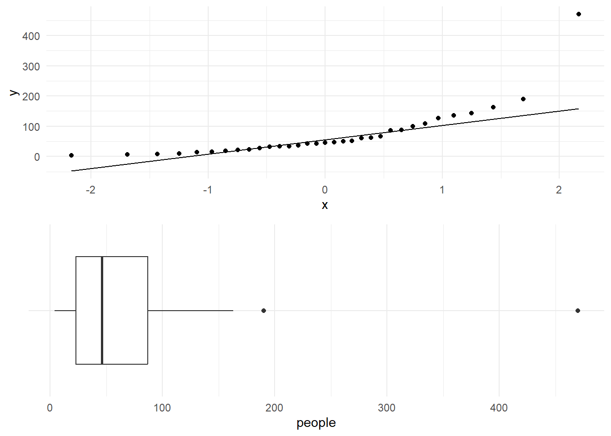
The same conclusion is drawn with the Kolmogorov-Smirnov test. Note that this test does not allow ties and can be used to test the fitting of non-normal distributions.
ks.test(rangitikei$people, "pnorm")Warning in ks.test.default(rangitikei$people, "pnorm"): ties should not be
present for the Kolmogorov-Smirnov test
Asymptotic one-sample Kolmogorov-Smirnov test
data: rangitikei$people
D = 0.99997, p-value < 2.2e-16
alternative hypothesis: two-sidedIt is often informative to analyse data by fitting a statistical model. The idea is to look for real patterns, “signals” amongst the “noise” of individual variation, patterns that would reoccur in other, hypothetical samples we might have drawn from the population. We often try to approximate patterns by fitting a “statistical model”. A A statistical model usually comprises a mathematical formula describing the relationships among variables, along with a probabilistic description of the variation of the data around the formula. If the statistical model is a good approximation, it serves as a neat way of describing the system that generated the data, and we can use such a model to predict future values of the variables.
testmarksThe data set tv consists of the time that 46 school children spent watching television. Before fitting a model to the data, it is a good idea to see whether the data approximately follows a Normal distribution using a normal Q-Q Plot; see Figure 3. The points plotted fall pretty much along the line, suggesting at least approximate Normality.
download.file(
url = "http://www.massey.ac.nz/~anhsmith/data/tv.RData",
destfile = "tv.RData")
load("tv.RData")P.val <- tv$TELETIME |>
shapiro.test() |>
pluck('p.value') |>
round(digits = 3)
p1 <- ggplot(tv) +
aes(sample = TELETIME) +
stat_qq() +
stat_qq_line() +
labs(caption = paste("Shapiro Test P value", P.val))
p2 <- ggplot(tv) +
aes(y=TELETIME, x="") +
geom_boxplot() +
xlab("") +
coord_flip()
gridExtra::grid.arrange(p1, p2, ncol=1) 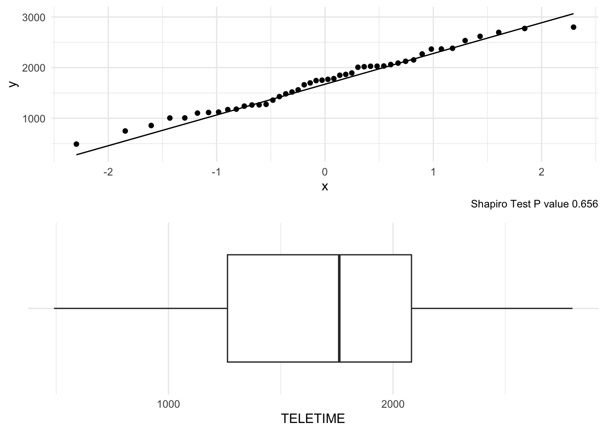
Figure 3 shows the boxplot of the data. The boxplot again suggests a very mild skew to the left but the middle 50% data show right skewness. However the whiskers are about the same length and there are no outliers. There is a difference of 31 between the mean and median, suggestive of a slight skew to the lower values. However this difference is small given the overall variability (standard deviation is 567.9, and the range is 2309) so we can probably ignore the observed skew. However we will look for any further evidence of skewness, since this could invalidate any inference we make based on the Normal distribution (at least it would if we had a smaller sample). The TV viewing time data also passes normality tests such as Shapiro-Wilk test. All told, we conclude that the normal model describes the distribution of these data fairly well.
As indicated earlier, a large number of naturally occurring measurements, such as height, appear to follow a Normal distribution so that a considerable amount of theory has been built on this distribution.
To recapitulate, Normal (or Gaussian) curves are determined by just two numbers, one indicating the location and the other the spread. Although there are an infinite number of Normal curves, their shapes are similar and, of course, the area under each curve is 1. Indeed, the location and spread parameters are the only differences between curves.
It is usual to take the measure of location as the mean, denoted by \(\mu\), and the measure of spread as the standard deviation, denoted by \(\sigma\). If a variable, Y, follows a Normal distribution with mean \(\mu\) and standard deviation \(\sigma\), we write Y \(\sim\) N(\(\mu\), \(\sigma\)) where \(\sim\) means is distributed as (The squiggly symbol \(\sim\) is known as tilde).
Note, however, that the Normal distribution, like all statistical distributions, is a theoretical concept and no naturally occurring measurement will exactly follow a probability distribution model. For one thing, any measurement is finite whereas the Normal curve is continuous in the interval \(\left(-\infty ,\infty \right)\). Also, the curve is asymptotic to the \(X\)-axis so that any range of values of \(Y\) however large or small will have a certain probability according to the Normal distribution, but in practice there will be limitations such as that a person’s blood pressure must be greater than zero.
Suppose we didn’t know that \(\mu\) = 80 and \(\sigma\) = 12. The obvious estimator of \(\mu\), based solely on the sample, is the sample mean \(\bar{y}\), and the obvious estimator of \(\sigma\) is the sample standard deviation \(S\). Note that by estimator we don’t mean the observed value based on the particular sample. Rather the word estimator means the mathematical formula or procedure that we use to produce our estimates, namely \(\bar{y}={\frac{1}{n}} \sum y\) and \(S=\sqrt{{\frac{1}{n-1}} \sum _{i=1}^{n}(y_{i} -\bar{y})^{2} }\).
The point is that there can be several alternative procedures for estimating the same parameters \(\mu\) and \(\sigma\), and in particular samples the actual computed estimates may be the same or different. For example, since the mean and median are the same for Normal data, we could estimate \(\mu\) by the sample median, namely 81.313 for our example. This different procedure has given rise to a different number, and if we didn’t know the answer we would not know which estimate to use. The median estimate has a lot of attraction, since the median is robust, that is, is not affected by outliers.
Clearly all these estimates are close to the true parameter values, but not the same. A statistical question relates to how close estimates are to their true values in general. We usually can’t answer this question about the actual estimates (observed numbers) since we usually don’t know the correct answer. One approach, which is often used to test procedures in research, is to try a number of simulations and see which approach produces the closest results on average. We can also give error bounds that say, for example, that 95% of the time the estimator is within such-and-such a distance of the true parameter. This leads to the idea of using probability or so-called ‘confidence’. By making probability statements about the estimators we can say something useful about how trustworthy the particular estimates are also. We use standard errors to measure the trustworthiness of the estimators. The standard error is the standard deviation of the estimator, so the smaller the standard error the better.
Without going into details, it turns out that \(\bar{y}\) has the smallest possible standard error for any unbiased estimator of \(\mu\) for normal data. (An unbiased estimator is one that is not systematically too big or too small.) While the same is not true of \(S\) in relation to \(\sigma\), the latter does have other useful mathematical properties. So these are some reasons for using these formulae so routinely.
A sampling distribution is a probabilistic model of sampling variation–it describes the behaviour of some sample statistic (such as a sample mean) if one were to repeat the sampling and calculation of the statistic many many times. The sampling distribution is not known, because we usually only have a single sample. However, we can make certain theoretical assumptions about how a statistic is distributed if one were to repeat the study over and over again.
For a normal population, when the population parameters \(\mu\) and \(\sigma\) are known, we can easily derive the sampling distributions of the sample mean or sample variance. When the population parameters are unknown, we have to estimate them from data. When the sample size is small, we have large standard errors around estimates of the population parameters, and the distributions of the sample mean or sample variance are poorly known.
The Student’s \(t\), \(\chi^2\) and \(F\) distributions are the three useful sampling distributions for testing hypotheses for a normal population when the population parameters are unknown. These distributions also have a closed form expression for their probability density function. This means that we can calculate the areas under the distribution functions, and calculate p-values.
The \(t\) distribution is the sampling distribution of the mean when \(\sigma\) is unknown. The \(\chi^2\) distribution is the sampling distribution of the sample variance \(S^2\) when re-expressed as \((n-1)S^2/\sigma^2\). The \(F\) distribution is ratio of two \(\chi^2\) distributions, and hence it becomes the sampling distribution of the ratio of two sample variances \(S_1^2/S_2^2\) from two normal populations (after appropriate scaling for the sample sizes).
While the \(t\) distribution is symmetric, the \(\chi^2\) and \(F\) distributions are right skewed. When the sample size \(n\) approaches infinity, both distributions become normal but you will start observing symmetry when the sample size(s) exceed 30.
For these sampling distributions, the sample size acts as the proxy parameter, called the degrees of freedom. For both \(t\), \(\chi^2\), the degrees of freedom, \(\nu\) is \((n-1)\). What this means is that the sampling distribution or the probability density of these two distributions depend only on the degrees of freedom \(\nu\). The F distribution is based on two samples of size \(n_1\) and \(n_2\). So, the F density has two parameters, \(v_1=(n_1-1)\) and \(v_2=(n_2-1)\) (often called the numerator and denominator degrees of freedom respectively).
The tail quantiles of \(t\), \(\chi^2\) and \(F\) distributions are used for hypothesis tests. You may like to visit https://shiny.massey.ac.nz/kgovinda/demos/demo.critical.values/ for exploring their probability densities and quantiles.
Sampling distributions of certain statistic such as the sample Range (=Maximum-Minimum) does not exist in a closed form but the quantiles of the distribution can be obtained numerically.
We cover the \(t\) distribution in some detail below:
\(t\) distribution
Now consider a single observation \(Y \sim\) N(\(\mu\),\(\sigma\)). We have already seen that if \(Z = (Y-\mu)/\sigma\), then \(Z \sim\) N(0,1). We can write this line slightly more generally as
\(Z= \frac{{\text {Observed(Y)-Expected(Y)}}}{{\text {Standard Deviation(Y)}}}\)
implies \(Z \sim\) N(0,1).
Next suppose we have a sample of \(n\) data values \(\left(y_{1},y_{2},...,y_{n} \right)\). From these we compute the sample mean \(\bar{y}\). It can be shown that the expected value of \(\bar{y}\) is \(\mu\) and also that the standard deviation of \(\bar{y}\) is \(\sigma /\sqrt{n}\). That is, if we take a large number of samples, then on average the various values of \(\bar{y}\) will tend to cluster around \(\mu\), and if \(n\) is large then they cluster around that value rather more closely than if \(n\) is small.
It also turns out that if \(\left(y_{1},y_{2},...,y_{n} \right)\) are each Normal then
\(Z=\frac{\bar{y}-\mu }{\sigma /\sqrt{n} } =\frac{{\text {Observed(Y)-Expected(Y)}}}{{\text {Standard Deviation(Y)}}}\)
is also N(0,1).
In this case, the standard error of the sample mean is the standard deviation of the original population divided by the square root of \(n\).
In fact, a profound result called the Central Limit Theorem (CLT) says that, if the sample size \(n\) is large enough, then \(Z = \frac{\bar{y}-\mu }{\sigma /\sqrt{n} }\) will approximately have a Normal distribution, almost regardless of the distribution of the data. (There is an exception to the CLT that relates to distributions with too many outliers.) The importance of the CLT to Statistics can hardly be overstated. It means we can draw conclusions about the population mean \(\mu\) based on the position of \(Z\) on the Normal tables, even though the sample of data may not look exactly Normal (for example the original data may be discrete or skewed). How large \(n\) has to be, before the Central Limit Theorem can be relied on, depends on the extent of skewness, discreteness, and so on. A commonly used guideline is \(n\) \(\geq\) 30. But this thumb rule requires random data to be drawn from a homogeneous population with no subgrouping. For discrete variables the probability mass should not be concentrated too much on a particular value.
Again suppose the data \(\left(y_{1},y_{2},...,y_{n} \right)\) are Normal. If the population standard deviation \(\sigma\) is not known then it must be estimated by the sample standard deviation \(S\). The sample mean is then standardised to a t statistic instead, where \[t=\frac{\bar{y}-\mu }{S/\sqrt{n} } \sim t_{n-1}\] The degrees of freedom associated with the \(t\) statistic is the same as the degrees of freedom associated with \(S\), that is, the \(n-1\) divisor in the formula for \(S\). The \(t\) distribution (Gosset 1942) is more spread out than the Standard Normal curve, that is, it is said to have fatter tails; see Figure 4. The extra spread reflects the fact that observed values of t tend to be more variable than observed values of \(z\). Essentially the \(t\) distribution is predictive and takes into account the uncertainty in the population spread.
curve( dt(x,1), xlim=c(-3.5, 3.5), ylim=c(0, 0.4), ylab="Density" )
curve( dt(x,2), add=T, lty=2 )
curve( dt(x,5), add=T, lty=3 )
curve( dnorm(x), add=T,lty=4 )
legend("topleft", c("t(1)", "t(2)", "t(5)", "Normal"),
lty=c(1,2,3,4))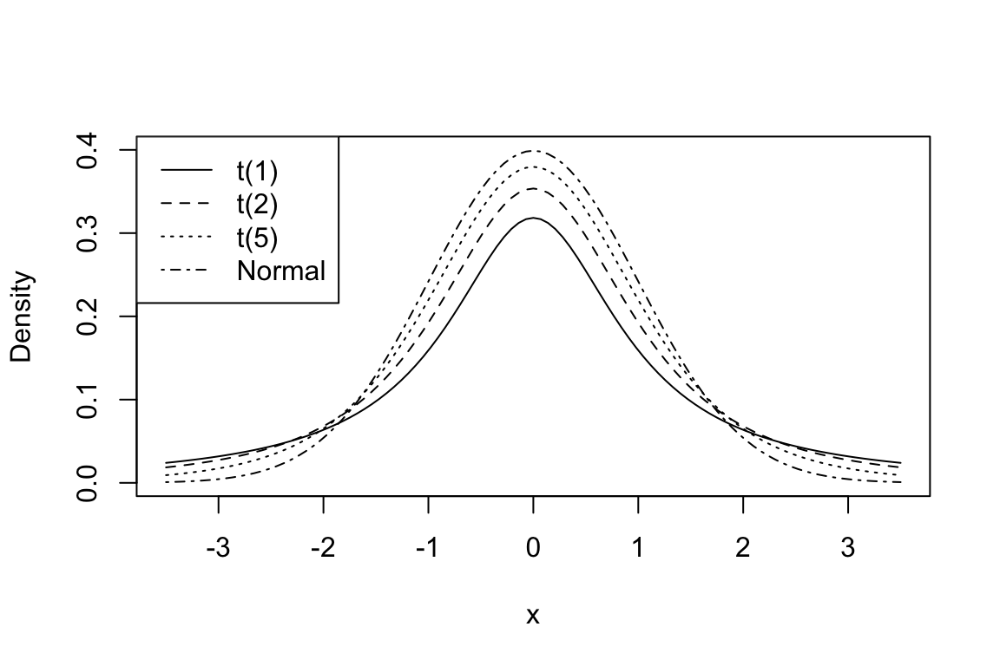
Note that, strictly speaking, the \(t\) distribution only holds true if the data \(\left(y_{1},y_{2},...,y_{n} \right)\) came from a Normal distribution. However some simulation studies have shown that the ratio \(t=\frac{\bar{y}-\mu }{S/\sqrt{n} }\) closely follows a \(t\)-curve even if the data are not Normal, provided that the data are not highly skewed. (Skewness tends to have a marked impact on \(S\) in the denominator, as well as on the mean \(\bar{y}\).) In practice, whenever a model is fitted to data, it is important to check that the assumptions of the model seem to hold. In this case, we could form a Normal Plot of the values of \(\left(y_{1},y_{2},...,y_{n} \right)\) to visually check whether they seem to follow a Normal distribution. The better the line, the more confidence we can have in our inference from the data.
If the batch of data consists of the whole population, the batch mean will be exactly the population mean \(\mu\). If the batch is a sample, the sample mean \(\bar{y}\) will be an exact summary of the sample, but may not be the same as \(\mu\). In fact, if another sample is drawn, a sample mean different to the first will be obtained. The sample mean will not exactly equal the population mean but will vary about it from sample to sample. This variation of the sample mean about the population mean is discussed in every introductory textbook on Statistics and also in Chapter 1 of these notes.
If the batch of data is a sample, it is natural to use it to try to infer certain characteristics of the population. In particular, we estimate the population mean \(\mu\) by the sample mean, \(\bar{y}\). It is also helpful to calculate an interval in which the population mean is likely to fall, giving the interval estimate with a certain margin of error:
Interval estimate of \(\mu\) = \(\bar{y}\) \(\pm\) margin of error .
To find the margin of error, we assume that the random variable, \(\bar{y}\), has a Normal distribution. Since we can never be 100% certain whether \(\mu\) falls in a certain interval we often settle for a 95% level of confidence. This means that the margin of error should be about two standard deviations of \(\bar{y}\). To be more correct,
margin of error = \(t\) \(\times\) e.s.e. (\(\bar{y}\)).
Here, e.s.e. stands for estimated standard error. It is usual practice to denote the spread of the observations in the batches by the term standard deviation. When referring to other statistics such as the sample mean, \(\bar{y}\), or the coefficients in an equation, the standard deviation of these statistics is usually termed standard error. For a sample of size \(n\), the standard error of \(\bar{y}\) is given by:
(estimated) standard error (\(\bar{y}\)) = standard deviation(\(Y\))/\(\sqrt n\).
If the batch is a sample, we rarely know the standard deviation of \(Y\) in the whole population and it is for this reason that we need to estimate it from the sample. It seems a long story but we have finally arrived at e.s.e., the estimated standard error \(S/\sqrt n\) To be specific, we define a 95% Confidence Interval for \(\mu\) as
\(\bar{y}\) \(\pm\) \(t \times (S/\sqrt n)\)
The term \(t\) is the appropriate percentile of the \(t\)-statistic with \(n-1\) degrees of freedom. The value of \(t\) will generally be greater than 2. This reflects the fact that there is additional variability in that the standard error is not known but must be estimated.
Be aware that this derivation of the confidence interval means that it is a statistic (that is, a formula based on sample observations) that works for 95% of samples. What we mean is that if we use this formula repeatedly over our lifetime, then on average 95% of the intervals we obtain will be correct (that is, will contain the true mean \(\mu\)) and 5% of the intervals we obtain will not be correct (that is, will not contain \(\mu\)). The only way to cut down our error rate is to increase the confidence level, for example use 99% confidence intervals instead, which means using a different value of \(t\). The problem with this strategy is that our intervals will always be that much wider, and we do not always need such a high level of confidence. In conclusion, we usually employ 95% confidence intervals unless the context indicates we should use some other level.
For the TV viewing time data, the sample mean = 1729.28 with (estimated) standard deviation = 567.91. Hence the (estimated) standard error of the mean is \(S/ \sqrt n = 83.73\). For the sample of size \(n = 46\), we have \(n-1 = 46-1= 45\) degrees of freedom for the \(t\) statistic. We may use either software or use Student’s \(t\) tables and obtain \(t\) ordinate (i.e. quantile) value as 2.01 corresponding to a right tail probability (area) of 0.025; see Figure 5. Due to symmetry, the area below the \(t\) ordinate of \(-2.01\) will also be 0.025.
curve( dt(x,45), xlim=c(-3.5, 3.5), ylim=c(0, 0.4), ylab="Density")
lowert=qt(.025, 45)
abline(v=lowert)
text(lowert, .4, "lower t quantile")
text(-2.9, 0.1, "2.5% left tail area")
uppert=qt(.975, 45)
abline(v=uppert)
text(uppert, .4, "upper t quantile")
text(2.9, 0.1, "2.5% right tail area")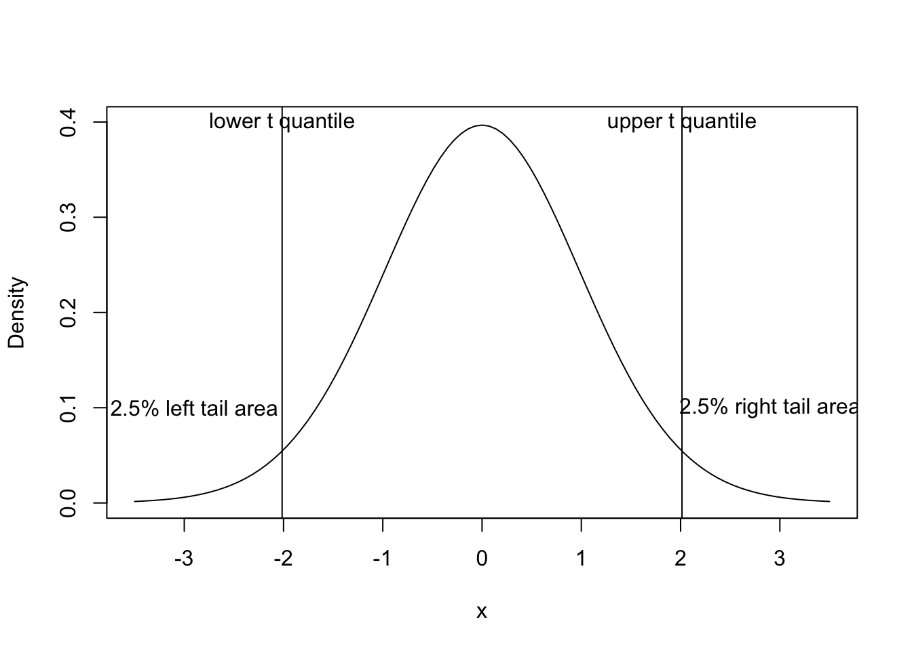
Having obtained the theoretical \(t\)-value, the 95% confidence interval can be found as
\(\bar{y}\pm t\times S/ \sqrt n\) = \(1729.28\pm 2.01\times83.73\) or (1560.63, 1897.93).
With 95% confidence, we can state that the population mean falls in the interval (1560.63, 1897.93).
If we want to be more confident that we have included the true value of the population mean, we could use a 99% confidence interval instead. That is, we make the interval wider by using the 99\(^{\text th}\) percentile of the \(t\) statistic (namely 2.69). The 99% confidence interval is computed as (1504.07, 1954.49), clearly wider than the 95% confidence interval.
The confidence interval estimate of the unknown population parameter (mean in the above discussion) is affected by the following:
Sample size is simply a trade off to obtain a confidence interval of a desired width. If a population is more variable, then it has to be sampled heavily. The width of the confidence interval and the degree of confidence are inversely related. The corollary is that a 100% confidence interval is of infinite width.
Confidence intervals are NOT unique. For example, we can leave 1% probability for the left tail and 4% probability for the right tail. But such an interval will be wider for symmetric distributions but may be appropriate for skewed sampling distributions. Confidence intervals may not always possess good statistical properties such as accuracy (probability of covering any wrong value of the parameter than the other) and unbiasedness (An unbiased 95% confidence interval has probability no more than 5% of covering any value of the parameter). Stronger assumptions must be made to obtain sharper confidence intervals.
One sided (lower or upper only) confidence bounds can be obtained and the confidence need not be expressed as an interval.
Also note that there many types of statistical intervals available in the literature, and the confidence interval is one such interval which is expected to capture an unknown parameter of the population. In our example, we used the mean of the population (parameter). Naturally, we can construct a CI for the median, 90th percentile etc. A prediction interval (which will discuss later on) deals with covering a desired fraction of the population and is different from a confidence interval.
“… the null hypothesis is never proved or established, but is possibly disproved, in the course of experimentation. Every experiment may be said to exist only to give the facts a chance of disproving the null hypothesis.”
– Sir R.A. Fisher.
Note that the confidence intervals give a range of likely values for the mean \(\mu\). Putting it another way, if someone postulated a value of \(\mu\) falling outside this interval (for example, that \(\mu=1000\)), then we could tell them that our data do not support their claim. On the other hand if they hypothesise a value of \(\mu\) inside the interval, (for example that \(\mu\) = 1600), then this value may not be exactly what our data suggest, but we could not reject their claim.
These thoughts lead to the more formal idea of hypothesis testing. In hypothesis testing we begin with a hypothesis about the value of some parameter, for example that the population mean \(\mu\) equals some specific value \(\mu_0\) say. In the television example we could use the specific value \(\mu_0=1500\) hours, say, but for the purpose of general discussion we prefer to just assume \(\mu_0\) is some fixed value.
The philosophy of classical statistical hypothesis testing was explained by Fisher (1935) using a context known as the “tea tasting lady” experiment. The original tea tasting experiment used a permutation test but we simplify this context in the following description.
A lady claimed that she can taste and tell whether milk or tea was poured first into the cup. Suppose that we tossed a fair coin to determine this in a series of trials. Coin tossing enables the binomial probability distribution as a model to determine the probability of various outcomes when tea tasting is done in a random order. Recall that the binomial mass function is given by-
\[P(X=x) = \binom{n}{x} p ^ x (1-p) ^ {n-x}\]
The null hypothesis is that the lady was guessing blindly. That is, there is equal probability for a correct guess and an incorrect one. The sample space here consists of all possible answers the lady might give in a series of random tasting of tea cups. Assume that 10 cups (with equal cases of milk and tea poured first) were randomly arranged and the lady guessed 9 cases correctly. We can calculate the probability of 9 correct guesses or more under the null hypothesis using the binomial distribution. We can find the probability of certain \(x\) number of correct guesses under the null hypothesis using R. See Table 1.
x <- 0:10
out <- cbind(x, Probability=round(1-pbinom(x, 10, 0.5), 3))| x | Probability |
|---|---|
| 0 | 0.999 |
| 1 | 0.989 |
| 2 | 0.945 |
| 3 | 0.828 |
| 4 | 0.623 |
| 5 | 0.377 |
| 6 | 0.172 |
| 7 | 0.055 |
| 8 | 0.011 |
| 9 | 0.001 |
| 10 | 0.000 |
Table 1 shows that the evidence in our data is well against the null hypothesis because the probabilities 9 or 10 correct answers are rather small.
So we cannot reject the lady’s claim. We often write our null hypothesis symbolically. For the tea lady example, the null hypothesis is written as \(H_0:p = 0.5\), where \(H_0\) is pronounced ‘H nought’ and means ‘the null hypothesis we are testing’ and \(p\) stands for the unknown proportion and \(p=0.5\) stands for guessing the outcome by throwing a coin.
In our testing we give the \(H_0\) the ‘benefit of the doubt’. That is, we won’t reject \(H_0\) unless we are strongly convinced by the data that it cannot be right. There is some analogy here to a court case, where the defendant (the hypothesis) is assumed innocent until proven guilty beyond all reasonable doubt (hypothesis assumed true until the data prove it false beyond all reasonable doubt). Unlike a court case, however, we are usually able to use probability models to quantify the level of doubt/disbelief in \(H_0\). Another example is that a student may like to verify the weight labelling on butter sold in the supermarket is correct or not. Assume that the student collects a sample 20 blocks of butter with 500g nominal weight declared. In this case, the null hypothesis would be that the true mean weight is indeed 500g. In legal metrology, formulation of such a null hypothesis is rather natural. Hall and Selinger (1986) provided a good discussion on the nature of hypothesis testing in his paper entitled “Statistical significance: Balancing evidence against doubt” (not compulsory but worth a read).
We often use software to perform hypothesis tests. The R output performing a one-sample proportion test output on whether the lady was outperforming the mere guessing strategy is shown below:
binom.test(x=9, n=10, p=0.5, alternative="greater")
Exact binomial test
data: 9 and 10
number of successes = 9, number of trials = 10, p-value = 0.01074
alternative hypothesis: true probability of success is greater than 0.5
95 percent confidence interval:
0.6058367 1.0000000
sample estimates:
probability of success
0.9 Do not worry the entries P-value and alternative appearing in the above output and these concepts are further explained in the later section.
As pointed out by Fisher, our hypothesis testing procedure does not prove or disprove the null hypothesis. We are simply assessing the evidence in the data against the null hypothesis. While describing the tea tasting experiment, Fisher (1935) (p.16) warned as follows:
“In relation to any experiment we may speak of this as the ”null hypothesis”, and it should be noted that the null hypothesis is never proved or established, but is possibly disproved, in the course of experimentation.”
More ideas on hypothesis testing follow in the next section.
For testing the mean of a population, the fact that we have specified a parameter value in \(H_0\) enables us to specify a probability distribution, for example that the data are a random sample from N(\(\mu_0\), \(\sigma\)). This immediately implies that
\(t = \frac{\bar{y}-\mu _{0} }{S/\sqrt{n} } \sim t{}_{n-1}\)
Now if the hypothesis \(H_0\) is true, we should have \(\mu\cong\mu_0\) . The notation equal-with-squiggle, \(\cong\), stands for “approximately equal to” ), so that \(t\) should generally be close to 0. If the hypothesis is false we should get either much less than \(\mu_0\) or much greater than \(\mu_0\), in which case \(t\) should be large, out in the tails of the \(t_{n-1}\) distribution. Since we have a probability distribution, we can quantify just how unlikely our particular \(t\) is by comparing our sample value with the distribution.
Let’s make things more specific by considering the television example. The degrees of freedom are \(n-1 = 45\). We have already indicated that \(t\cong0\) implies \(\mu\cong\mu_0\), in other words that the data matches the hypothesis very closely. But suppose instead we observed \(t= 0.68\). Could we regard this as an unusually large value of \(t\), that is, as evidence against \(H_0\)? The answer is no! The reason is that 0.68 is the upper quartile of the \(t_{45}\) distribution; in other words half (50%) of the time we would see values of \(t\) either greater than 0.68 or less than -0.68, even if the hypothesis \(H_0\) is true. Now what if \(t\) were below -1.6794? Would that be regarded as an unusual amount of discrepancy between \(t\) and \(\mu\), that is as evidence against \(H_0\)? The answer is maybe. The fact is that 10% of the time one sees \(t\) \(<-1.6794\) or \(t>1.6794\), even if \(H_0\) is true. So if we use this rule, we have a 10% chance of wrongly rejecting \(H_0\). Few New Zealanders would feel happy with a legal system that allowed a 10% chance of wrongfully convicting an innocent person. Finally, what if we observe \(t= -2.6896\)? Only 1% of the area under the \(t_{45}\) curve lies outside the interval -2.6896 to +2.6896, so we would conclude that such a value of \(t\) was quite unlikely. This then would be strong evidence against \(H_0\).
Suppose now we test the extremely unlikely hypothesis \(H_0:\mu = 0\). Since \(S/\sqrt n=83.7\), we obtain \(t = (1729.3-0)/83.7 = 20.65\). This is far larger than could be expected by chance, so the \(t\) statistic provides clear evidence against \(H_0\).
A more realistic test may be whether \(H_0:\mu = 1500\). Perhaps a previous study found an average time of viewing of 1500 minutes per week, and we want to check this. The test statistic is: \(t=(1729.3-1500)/83.7=2.74\). This is just outside our 1% bounds established earlier, so we conclude the data and \(H_0\) do not seem to agree. We reject \(H_0:\mu=1500\).
Finally suppose we test the hypothesis \(H_0:\mu=1600\). Again this hypothesis could have been prompted by a previous study. Then \(t=(1729.3-1600)/83.7=1.54\). This is within the interval -1.6794 to 1.6794, suggesting that 1.54 is not an unusually highly value since it is exceeded more than 10% of the time when \(H_0\) is true. We would not reject the hypothesis \(H_0:\mu = 1600\).
When statistical test of hypothesis is done using R software, we rely on the \(p\)-value displayed.
t.test(tv$TELETIME, mu=1500)
One Sample t-test
data: tv$TELETIME
t = 2.7382, df = 45, p-value = 0.008818
alternative hypothesis: true mean is not equal to 1500
95 percent confidence interval:
1560.633 1897.932
sample estimates:
mean of x
1729.283 So what is a \(P\)-value? Formally, A P-value is the probability of observing data as extreme or more extreme as the data you actually observed, if \(H_0\) is true. This sounds like a very abstract and difficult concept to grasp, but it’s in fact exactly the rule we have been using. We saw that 50% of the time, \(t<-0.68\) or \(t>0.68\). So the \(p\)-value for a \(t=0.68\) is 0.5. We saw that 10% of the time, \(t<-1.6794\) or \(t>1.6794\). So the \(p\)-value of \(t= -1.6794\) is 0.1. And we saw that 1% of the time \(t<-2.6896\) or \(t>2.6896\), so the \(p\)-value of \(t=2.6896\) is 0.01. What is the \(p\)-value of \(t= 2.74\)? The answer is 0.009 or just under 1%. What is the \(p\)-value of \(t= 1.54\)? Answer is 0.130.
Usually, we reject \(H_0\) in favour of \(H_{1}\) if the \(p\)-value of the data is \(< 0.05\). In this case the test is said to be significant, and the 0.05 is called the significance level of the test. Otherwise (when we don’t reject \(H_0\)) we call the test non-significant. Some refer to a \(p\)-value \(<0.01\) as very significant or highly significant. In journal articles and published tables of results, the three case non-significant, significant, and highly significant are often abbreviated as NS, * and ** respectively. The issues of using a standard cut-off of 5% for significance level, largely insisted in journals, has had its unintended consequences. The false discovery in science can be avoided if P values are not used as the sole criterion to draw conclusions. Read the advice on P values presented next.
Advice on the use of P values
Unfortunately the P-values are often misunderstood in practice. The advice issued by the American Statistical Association (https://www.amstat.org/asa/files/pdfs/P-ValueStatement.pdf) is noteworthy:
The statement’s six principles, many of which address misconceptions and misuse of the p-value, are the following:
P-values can indicate how incompatible the data are with a specified statistical model.
P-values do not measure the probability that the studied hypothesis is true, or the probability that the data were produced by random chance alone.
Scientific conclusions and business or policy decisions should not be based only on whether a p-value passes a specific threshold.
Proper inference requires full reporting and transparency.
A p-value, or statistical significance, does not measure the size of an effect or the importance of a result.
By itself, a p-value does not provide a good measure of evidence regarding a model or hypothesis.
In order to fully appreciate the reasons behind the above advice, we need learn more theory but you should be able to understand the following distinction between statistical significance and practical significance. A hypothesis test may suggest that the estimated size of the effect is not big enough compared to the effect that can occur due to errors under the assumed model. A small effect, particularly if it is known to be caused by a variable, can be of practical importance and can contribute to scientific knowledge. The opposite scenario is also possible. We may find a small difference to be statistically significant because of the large sample size but such a difference may not be of much practical significance.
A hypothesis test has a certain power (probability) to reject the null hypothesis when it is false. This power (probability) is a function of the sample size and the unknown parameters of the probability model adopted for testing.
Assume that we are testing the null hypothesis \(H_0:\mu = 0\) using the null model \(N(0,1)\). The power of the one sample t test can be evaluated using the R function power.t.test() for a given \(\delta\), the difference in the true mean and what was hypothesised under \(H_0\). For example, the power of the \(t\)-test for \(n=30\) is lower than the power when \(n=50\) (say) when other settings are the same. Try-
power.t.test(n = 30, delta = 1, sd = 1, sig.level = 0.05)
power.t.test(n = 50, delta = 1, sd = 1, sig.level = 0.05)The power to detect a small change in the mean is often low. Try-
power.t.test(n = 30, delta = .25, sd = 1, sig.level = 0.05)
power.t.test(n = 30, delta = 1, sd = 1, sig.level = 0.05)There is a trade-off between the significance level (Type I error or false positive) and Type II error or false negative (=1-power) probabilities. Try-
power.t.test(n = 30, delta = 0.5, sd = 1, sig.level = 0.05)
power.t.test(n = 30, delta = 0.5, sd = 1, sig.level = 0.01)When we test many hypothesis in tandem, we are more concerned on the overall or family-wise error rates. The issues of false discovery in science is discussed in a later section.
P hacking is a phrase used when a particular test or a meta procedure is deliberately chosen either to ensure a low p-value or just to achieve a value below 0.05.
In an earlier section, we considered confidence intervals and hypothesis tests for the television viewing times of pupils (tv). Now this sample can be divided into two groups, viewing times for boys and viewing times for girls. The boxplots in Figure 6 indicate that the median viewing time for boys (Sex=1) is less than for girls (Sex=2) although the spread of times is greater for the group of boys. The slopes in the normal quantile plot also confirms the differing spread.
p1 <- ggplot(tv) +
aes(sample = TELETIME, color=SEX, shape=SEX) +
stat_qq() +
stat_qq_line(aes(linetype=SEX))
p2 <- ggplot(tv) +
aes(y=TELETIME, x=SEX) +
geom_boxplot() +
xlab("") +
coord_flip()
gridExtra::grid.arrange(p1,p2, ncol=1) 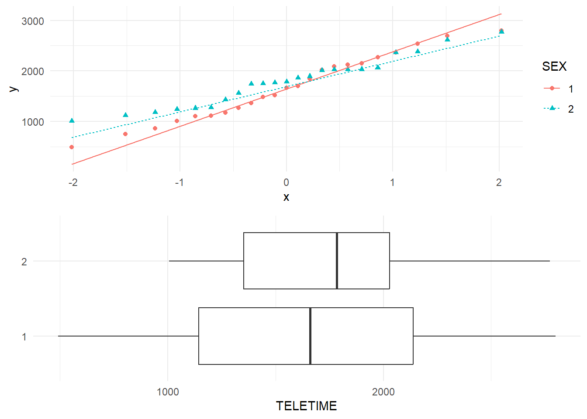
We see that average number of minutes per week of television watched is 1668 for boys and 1790 for girls. The difference in sample means for these two groups is \(1668-1790=-122\). The question arises as to whether this indicates a real difference in viewing times between the sexes in the population as a whole (all New Zealand primary age pupils?). We should keep in mind the distinction between samples and populations and, to do this, population values are usually written in Greek letters. The notation is:
| Population means and SDs | Sample means and SDs | Sample size |
|---|---|---|
| \(\mu _1 ,\,\,\sigma _1\) | \(\bar {y}_1 \,\,,\,\,S_1\) | \(n_1\) |
| \(\mu _2 ,\,\,\sigma _2\) | \(\bar {y}_2 \,\,,\,\,S_2\) | \(n_2\) |
We are assuming that we have information about the samples and wish to make inferences about the populations. In particular, we wish to make inferences about the difference in population means, (\(\mu _{1}-\mu _{2}\)), from the difference in sample means, \(\bar{y}_{1} -\bar{y}_{2}\), and the variances of the two samples, \(S_{1}^{2}\) and \(S_{2}^{2}\).
The null hypothesis is that population means of the two groups are equal (written as \(H_0:\mu_1 = \mu_2\) or \(H_0:\mu_1-\mu_2=0\)). The alternative hypothesis is that the population means of the two groups are different (i.e., \(H_0:\mu_1\neq \mu_2\) or \(H_0:\mu_1-\mu_2\neq0\)). Note that when the two population means are different either \(\mu_1>\mu_2\) or \(\mu_1<\mu_2\).
The difference in sample means \(\bar{y}_{1} -\bar{y}_{2}\) can be standardized to give a \(t\) statistic:
\(t\) = ((\(\bar{y}_{1} -\bar{y}_{2}\))- expected)/e.s.e.
The test statistic is \((\bar{y}_{1} -\bar{y}_{2})\), which has the expected value of zero under the null hypothesis.
The estimated standard error (e.s.e) of (\(\bar{y}_{1} -\bar{y}_{2}\)), is obtained in two ways depending on whether it is plausible or not to make the assumption that the variances within the populations are the same, (i.e. \(\sigma _{1}^{2} =\sigma _{2}^{2}\)). Whether this assumption appears to be tenable or not can be explored using boxplots etc. For the television viewing time example, the variances of the TV viewing times do not appear to be the same for boys and girls. If the variances of the two populations are the same, then we will use a method of combining the individual variances of the groups to form a pooled variance estimate. To do this, we cannot simply average the two variances as the sample sizes may be quite different. A weighted sum is called for to give:
pooled estimate of variance, \(S_{p}^{2} =w_{1} S_{1}^{2} +w_{2} S_{2}^{2}\)
where the weights are, \(w_{1} =\frac{n_{1}-1}{n_{1} +n_{2}-2}\) and \(w_{2} =\frac{n_{2}-1}{n_{1} +n_{2}-2}\). Hence the pooled estimate of the standard deviation is given by
\(S_p = \sqrt{ w_1S_{1}^2 + w_2S_{2}^2 }\) or
\[S_{p} =\sqrt{\frac{\left(n_{1}-1\right)S_{1}^{2} +\left(n_{2}-1\right)S_{2}^{2} }{n_{1} +n_{2} -2} }\] Consequently,
Estimated standard error (\(\bar{y}_{i}\))=\(\frac{S_{p}}{\sqrt{n_{i}}},~~~i = 1, 2\)
so that
Estimated standard error (\(\bar{y}_{1}-\bar{y}_{2}\))=\(S_{p} \sqrt{1/n_{1}+1/n_{2}}\)
If the variances of the two populations are not the same, then we cannot pool the variances. Hence the estimated standard error for the difference in the two sample means is given by
Estimated standard error (\(\bar{y}_{1}-\bar{y}_{2}\))=\(\sqrt{\frac{S_{1}^{2}}{n_{1}} +\frac{S_{2}^{2}}{n_{2}}}\)
The degrees of freedom for our \(t\)-test (called the two-sample \(t\) test) depends on whether estimated standard error is based on the pooled variance or not. For the variance pooled case, the \(df\) for the \(t\)-test is \(n_{1}+n_{2}-2\) but becomes smaller for the unpooled case to \[df=\frac{\left(\frac{S_{1}^{2}}{n_{1}} +\frac{S_{2}^{2} }{n_{2}} \right)^{2} }{\frac{1}{n_{1} -1} \left(\frac{S_{1}^{2}}{n_{1}}\right)^{2} +\frac{1}{n_{2} -1} \left(\frac{S_{2}^{2}}{n_{2} } \right)^{2}}\] That is, the \(df\) is adjusted according to the ratio of the two variances. The \(t\)-test is also approximate when the variances are not pooled and hence it would be advisable to perform a transformation as later outlined in this Chapter.
Hand calculations for the two sample \(t\)-test are cumbersome. The test done on computer usually gives us an output which contains the \(t\)-statistic value and the associated \(p\)-value. Supplementary details such as the standard errors of the sample means, and their difference, associated \(df\) etc will also be contained. The R output given below shows the two-sample test results for the TV viewing data set. Here we test whether the true mean TV viewing times are the same for boys and girls.
t.test(TELETIME~SEX, data=tv)
Welch Two Sample t-test
data: TELETIME by SEX
t = -0.7249, df = 40.653, p-value = 0.4727
alternative hypothesis: true difference in means between group 1 and group 2 is not equal to 0
95 percent confidence interval:
-462.1384 218.0514
sample estimates:
mean in group 1 mean in group 2
1668.261 1790.304 Based on the EDA evidence seen in Figure 6, we may take a conservative stand and prefer the unpooled two-sample \(t\)-test (which is also known as Welch Two Sample t-test). The \(t\)-value of -0.72 is not unusual as the probability of getting such an extreme value under the null hypothesis is \(p=0.47\). In other words, we cannot reject the null hypothesis; we accept it until we have more evidence to the contrary. Hence the conclusion of the \(t\)-test is that the mean TV viewing times can be regarded as the same for the population of boys and girls. Alternatively there is no statistically significant gender effect on TV watching for boys and girls of Standards 2 to 4.
The 95% Confidence Interval for the difference \(\left(\mu _{1} -\mu _{2} \right)\) in population means is given by:
difference in sample means \(\pm t \times\) e.s.e .
Or more specifically,
Interval estimate for \((\mu _1-\mu _2)\) = \((\bar{y}_{1}-\bar{y}_{2})\pm t \times\) e.s.e.\((\bar{y}_{1} -\bar{y}_{2})\).
Based on the \(t\) quantile value of 2.021 for 40 \(df\), the CI in the unpooled case is
\(-122 \pm2.021\times\sqrt{\frac{648^{2}}{23}+\frac{482^{2}}{23}}\) or \((-462.3, 218.2)\)
The \(t\)-test output for the null hypothesis \(H_{0}:\mu _1=\mu _2\) (or \((\mu _1-\mu _2)= 0)\) gives the confidence interval too. Notice that the CI actually includes zero as a possible value. This means that it is possible \((\mu_1-\mu_2)=0\); so we cannot reject the null hypothesis.
Note that the two-sample data may be simply paired observations. For instance, a measurement may be made on the left and right eyes of the same person. If observations are paired in some way, a one-sample \(t\)-test on the difference \(\left(X_{i} ,Y_{i} \right)\) will suggest whether the true mean of the differences can be regarded as zero or not. Such a test will be more powerful than a two sample \(t\)-test because of the correlation between the paired observations. If the correlation is weak, it is desirable to ignore the pairing variable and perform a two-sample \(t\)-test.
Consider the maths and English test scores of students available in the data set testmarks. These test scores are paired being the scores of the same student. The correlation or linear relationship between the maths and English scores is high; see Figure 7.
download.file(
url = "http://www.massey.ac.nz/~anhsmith/data/testmarks.RData",
destfile = "testmarks.RData")
load("testmarks.RData")library(GGally)
ggpairs(testmarks)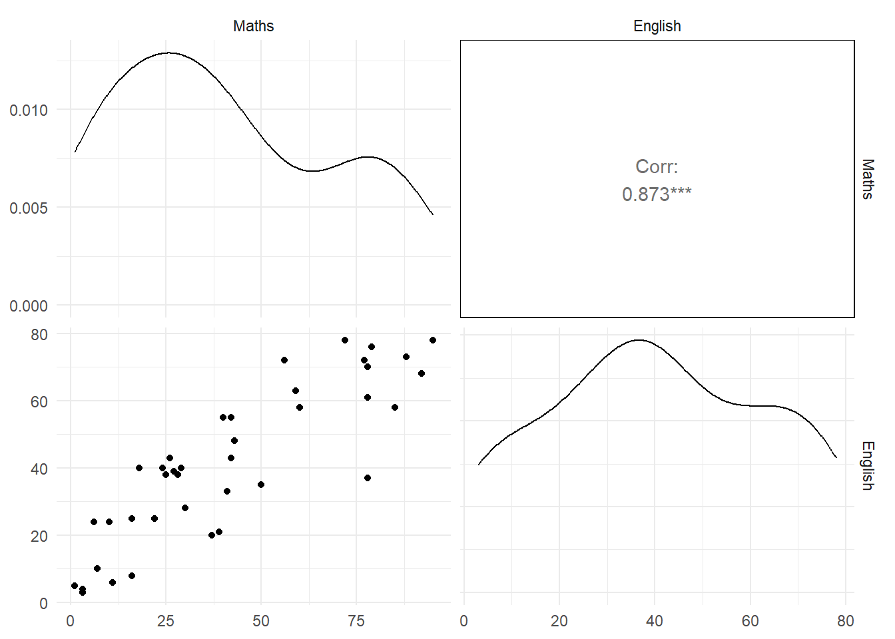
The paired \(t\)-test or the one-sample \(t\)-test on the difference in scores gives a \(t\)-statistic of 0.17 (\(p\)-value of 0.868). This means that the true average difference in test scores can be regarded as zero or alternatively the true mean scores of maths and English can be regarded as equal.
t.test(testmarks$Maths, testmarks$English, paired=T)
Paired t-test
data: testmarks$Maths and testmarks$English
t = 0.16745, df = 39, p-value = 0.8679
alternative hypothesis: true mean difference is not equal to 0
95 percent confidence interval:
-4.154646 4.904646
sample estimates:
mean difference
0.375 A transformation is a function that is applied to each observation in a data set to make the distribution of the data symmetric (or even normal if possible). There are several reasons for this:
To make comparisons between two or more groups of data easier. Different samples may differ in a number of ways; different medians, spreads and even the shape of the distributions. The shape of a graph is actually quite hard to describe in words, let alone to compare numerically. But if we can transform the distributions to each have a similar shape (and especially to make them symmetric), then we can summarise all the remaining differences by numbers: medians, IQR, etc. This simplifies comparisons enormously.
It may enable us to describe the data by a simple model; for example the normal distribution. We can then use the model to: compute probabilities, such as the probability an observation will exceed a certain value; simulate new data, to help us predict what may happen in the future; compute confidence intervals for parameters; and for comparative statistical inference, for example computing \(p\)-values for differences in group means.
To make the variances of groups of data nearly equal. This is needed in the fitting of certain statistical models.
Of course for much statistical inference we don’t need the data to be normal itself, but can rely on the central limit theorem. But results based on the CLT will be more dependable if the data are at least symmetric, or can be made symmetric, as we shall see in an example. Thus in this chapter we shall be mainly concerned with transforming data to symmetry (with perhaps a secret longing that the data will be almost normally distributed).
When considering data, we may decide to use the measurements as they are, or we may rescale them. For example, we may change them to percentages of the total. As a simple example, consider a town with four stores in which the weekly turnovers are one, two, four and eight thousand dollars. These could be rescaled to percentages of the total (which is 15).
| Raw data | 1 | 2 | 4 | 8 |
| Data in % | 1/15 \(\times\) 100= 6.7% | 2/15 \(\times\) 100 = 13.3% | 4/15 \(\times\) 100= 26.7% | 8/15 \(\times\) 100= 53.3% |
If you were to compare a dotplot of the original data with a dotplot of the rescaled data you would find that the shape of the data had not changed by this rescaling. That is, the second percent is twice the first and the second weekly turnover is almost twice the first; the third percent is four times the first and twice the second and so on. This is an example of a linear transformation.
A linear transformation is one that can be described by the formula, \(y=a+bx\) for certain constants \(a\) and \(b\), and where \(x\) is the old data and \(y\) is the transformed data. The key thing about linear transformations is that they do not change the shape of a dotplot, only the scale. Another linear example is converting temperature data from Fahrenheit (\(x\)) to centigrade \(y = 5(x-32)/9\). Boxplots of the temperatures would look the same even though the scale was altered.
Another way of rescaling the store example would be to calculate the weekly turnover of a store divided by the number of employees in that store, to give weekly turnover per employee. Even though this looks like a linear transformation it is not, since the relative positions of the four stores on a scale would change depending on the number of employees. If we have two or more variables (e.g. turnover, employees) it is often useful to look at ratios like this to seek simple explanations of the data.
rht <- data.frame(RHT=rbeta(1e3, 1,5))
p1 <- ggplot(rht) +
aes(RHT) +
geom_histogram() +
xlab("") + ylab("") +
ggtitle("(a) Needs a Shrinking Transformation")
p2 <- ggplot(rht) +
aes(y=RHT, x="Right Skewed Data") +
geom_boxplot() +
xlab("") + ylab("") +
coord_flip()
lht <- data.frame(LHT=rbeta(1e3, 5,1))
p3 <- ggplot(lht) +
aes(LHT) +
geom_histogram() +
xlab("") + ylab("") +
ggtitle("(a) Needs a Stretching Transformation")
p4 <- ggplot(lht) +
aes(y=LHT, x="Left Skewed Data") +
geom_boxplot() +
xlab("") + ylab("") +
coord_flip()
gridExtra::grid.arrange(p1, p3, p2, p4, ncol=2) `stat_bin()` using `bins = 30`. Pick better value with `binwidth`.
`stat_bin()` using `bins = 30`. Pick better value with `binwidth`.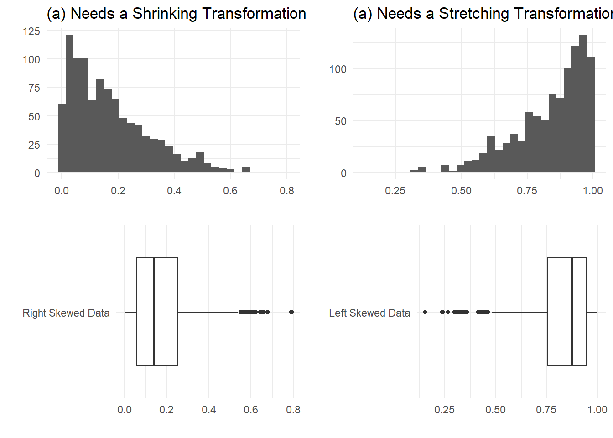
In this chapter, we focus on transformations involving just one variable (though perhaps more than one batch of data on that variable). Our goal is to change the shape of a distribution to make it more symmetric. Consider the two distributions in Figure 8 in which (a) is skewed to the left and (b) to the right. These could be made more symmetric by stretching the large values in (a) but shrinking them in (b).
From now on we assume that the data are very skewed, and we wish to transform it, (or, in Tukey’s terms, re-express it) to be as symmetrical as possible. A simple approach considers the data raised to different powers, that is, if the original data are \(x\) and the new data are \(y\),
\[y =\left\{\begin{array}{l} { \text {sign} (\lambda )x^\lambda~~~~~ \lambda \ne 0} \\ {\log(x)~~~~~~~~~~~\lambda = 0} \end{array} \right.\]
Note that the Greek letter \(\lambda\) is pronounced as lambda. Here, (\(\text {sign}(\lambda)\)) is +1 if \(\lambda>0\), and \(\text {sign}(\lambda)=-1\) if \(\lambda<0\), for reasons discussed below. Some special cases of this power transformation are set out below:
| POWER | Formula | Name | Result |
|---|---|---|---|
| 3 | \(x^3\) | cube | stretches large values |
| 2 | \(x^2\) | square | stretches large values |
| 1 | \(x\) | raw | No change |
| 1/2 | \(\sqrt{x}\) | square root | squashes large values |
| 0 | \(\log{x}\) | logarithm | squashes large values |
| -1/2 | \(\frac{-1}{\sqrt{x}}\) | reciprocal root | squashes large values |
| -1 | \(\frac{-1}{x}\) | reciprocal | squashes large values |
Raising the data to the power of 1 does not change it at all; as we proceed down or up from 1, the strength of the transformation increases. The special case \(\lambda\)=0 has to be handled differently since \(x^0=1\) for all non-zero \(x\). Instead we conventionally regard it as being equivalent to taking the natural logarithm because the transformation \(\frac{x^{\lambda } }{\lambda } -\frac{1}{\lambda }\) is close to the logarithmic transformation if \(\lambda\) is small. The ‘common’ logarithm to base 10 could be used but it just yields a constant multiple of the natural logarithm (ln = log to the base \(e\)). Now regarding the \(\text {sign}(\lambda)\): Notice that with two numbers, say 2 and 5, the reciprocal transformation would yield 0.5 and 0.2 so that, whereas the original numbers are increasing in size the transformed values are decreasing. To keep the order the same we take the negative of the reciprocal values, -0.5 and -0.2. These are again increasing. The same principle holds for all transformations where \(\lambda\) is negative. \(\text {sign}(\lambda)\) is employed to keep the order the same as the raw data. (Alternatively we could divide by \(\lambda\) which is consistent with the case of power zero that is the logarithm transformation).
p1 <- ggplot(rangitikei) +
aes(y=vehicle^2, x="") +
geom_boxplot() +
xlab("") +
coord_flip() +
ggtitle("Square Transformation")
p2 <- ggplot(rangitikei) +
aes(y=vehicle, x="") +
geom_boxplot() +
xlab("") +
coord_flip() +
ggtitle("Raw Data")
p3 <- ggplot(rangitikei) +
aes(y=vehicle^.5, x="") +
geom_boxplot() +
xlab("") +
coord_flip() +
ggtitle("Square-root Transformation")
p4 <- ggplot(rangitikei) +
aes(y=log(vehicle), x="") +
geom_boxplot() +
xlab("") +
coord_flip() +
ggtitle("log Transformation")
gridExtra::grid.arrange(p1,p3,p2, p4, ncol=2) 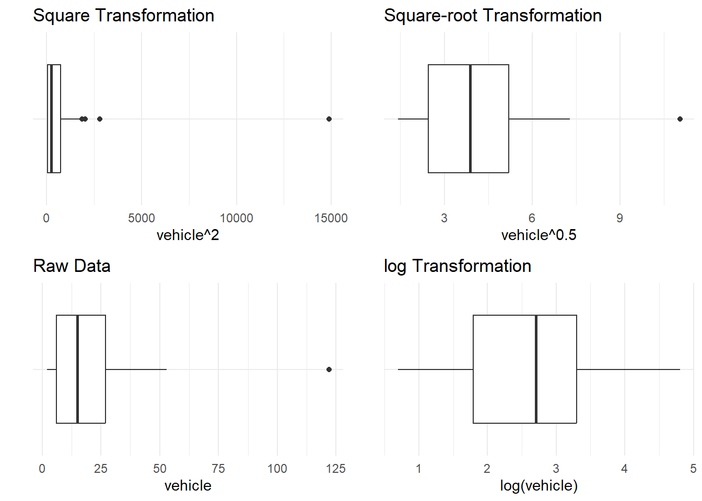
As an example, the boxplots in Figure 9 represent the number of vehicles at the two Rangitikei river locations (from rangitikei). The first boxplot shows the square of the number of vehicle, which is highly right-skewed. The second boxplot shows the raw data (vehicle) which are still skewed towards the larger values. So to squash these to make the distribution more symmetric, the ladder of powers suggests we could try a square root transformation, or a stronger one such as the logarithm (or reciprocal root). These are shown in the third and fourth boxplots.
Since the purpose of transforming the data is to make it more symmetric, we need to decide if we have achieved this goal. One approach which has been suggested is to consider the difference mean-median where the vertical lines stand for “the absolute value of” which means we ignore a negative sign if it occurs. If the batch is symmetric then the mean equals the median so that the difference mean - median= 0. We could design a measure, D, of symmetry by standardising it. That is, we divide this difference by a measure of spread - we could choose either the standard deviation or the F spread, whichever is at hand. These choices give the so-called D-Statistics:
D1 = (mean - median)/ std.dev. or
D2 = (mean - median)/F-spread.
Instead of calculating the mean, we could use the mid-F to give
D3 = (mid-F - median)/F-spread.
We first choose one of these criteria, and then apply it to all the transformations in turn, choosing as ‘best’ that transformation which gives the smallest absolute value of D (provided that other considerations do not disqualify it). Note that, in practice it is useful not to take absolute values when calculating the D-statistics, since a change of sign helps us to locate the zero of D, i.e. the direction of skewness of the data.
The following table gives the values of D1, D2, and D3 (with sign retained) for the four transformations.
| D-statistic | vehicle | vehicle\(^2\) | \(\sqrt{vehicle}\) | loge(vehicle) |
|---|---|---|---|---|
| D\(_{1}\) | 0.2724 | 0.2831 | 0.1308 | -0.0945 |
| D\(_{2}\) | 0.2973 | 1.0615 | 0.0978 | -0.0611 |
| D\(_{3}\) | 0.0714 | 0.2273 | -0.0183 | -0.1092 |
source("http://www.massey.ac.nz/~anhsmith/161250/eda/lval.R")
lval(log(rangitikei$vehicle))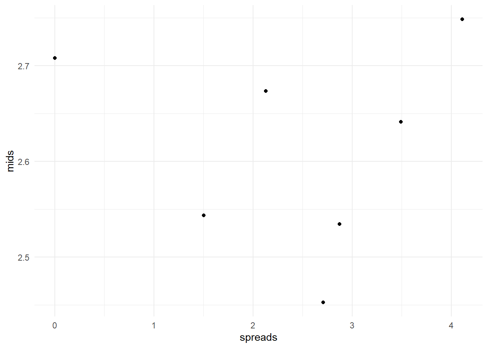
The D-statistics D1 and D2 presented above suggest that the natural log would be the best transformation. But D3 values suggest in favour of the square root transformation. Note that D3 is sensitive only to skewness in the middle 50% of the data, whereas D1 and D2 are sensitive to skewness in the whole data set. The boxplots of Figure 9 would tend to confirm these observations on the D-statistics. Note also that \(\text {vehicle} ^2\), \(\text {vehicle}\) and \(\sqrt{\text {vehicle}}\) have produced positive values for the D-statistics indicating that these variables are skewed to the right (i.e. positive skewness) while \(\text {loge(vehicle)}\) data are mildly negatively skewed.
Having chosen the transformation it is a good idea to check it graphically using a mids vs. spreads plot. The plot in Figure 10 shows a consistent upward trend in the untransformed (raw) data (right-skewed). Again a general upward trend is seen for squared data indicating that the skewness is not fully corrected. The square root data still shows the positive trend, which means that the transformation has failed to correct the skew in the non-middle 50% of the data. For logged data, the mids vs. spread plot shows a random scatter of points. This confirms the conclusion from the D statistic that the log transformation works well to correct the skew in the non-middle part of the data. Note that we may also compute the D-Statistics using the IQR in place of F-spread and the results will often be similar.
The D values can be compared for the same data set but we should be wary of comparing the D value from one data set with that of another (possibly transformed) data set.
Any one statistic can never capture all the peculiarities of a data set so that the D values should be used in conjunction with other measures and/or graphs.
If the data set is small, transformations should be approached with some scepticism, for if more data were available the shape of the distribution may change.
It should be kept in mind that there are different levels at which data can be considered such as (a) just a collection of numbers (any reasonable transformation would suffice); (b) referring to physical quantities (certain transformations may make physical sense and allow meaningful interpretations to be made) and (c) outcomes from a certain process (for example, frequencies or counts may often suggest a Poisson distribution for which a square root transformation is suitable). The choice of a transformation may depend on the additional information that is known about the batch of data.
Common sense should prevail in this area as a transformation which brings only marginal improvement to symmetry, for example, should be balanced against other drawbacks such as the difficulty of interpreting the results. For example, the logarithm function turns multiplications to additions and powers to multiplications. Hence it turns divisions to subtractions and roots to divisions. Thus the geometric mean becomes the arithmetic mean and the ratio of geometric means becomes the difference between arithmetic means. Therefore reversing the transformation implies that a confidence interval for the difference between the means of the transformed data becomes a confidence interval for the ratio of the geometric means of the two groups of raw data.
Although a transformation may lead to symmetry it may be better to consider other approaches. For example, the stem-and-leaf or dotplot display may show that there are at least two subgroups in the data. Transformations do not really solve the problem and we may have to subdivide the data into groups.
Note that there are several other transformation functions available. For example, transformations such as arcsine are useful for proportion data.
A systematic approach to power transformations was developed by Box and Cox (1976) and Box and Cox (1982). Their method produces a log-likelihood curve of possible values for the power \(\lambda\). Without going into details, the higher the curve is for a particular value of \(\lambda\), the more normal the transformed data will be. The plot of the log-likelihood curve of the Box-Cox method applied to the vehicle data is shown in Figure 11.
library(MASS, exclude = 'select')
boxcox(rangitikei$vehicle ~ 1)
title("Log-likelihood curve of Box-Cox power parameter")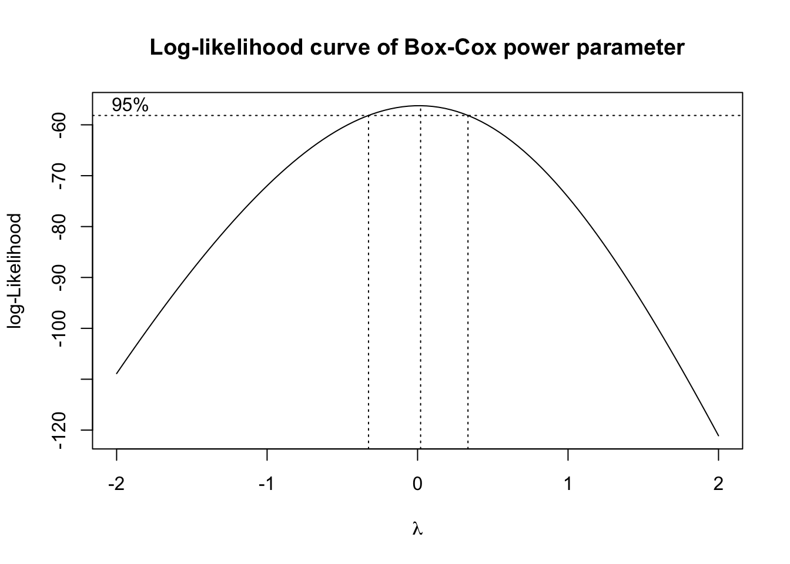
The curve peaks near zero indicating that a log transformation would be appropriate. In addition to the curve the plot contains a 95% confidence interval for the transformation parameter \(\lambda\). The two vertical dotted lines are the endpoints of the confidence interval for \(\lambda\). In this case the width of the confidence interval is quite small. The wider the confidence interval, the less obvious the choice for \(\lambda\). If the confidence interval contains 1, then there is no need to perform a transformation. Note that the Box-Cox transformation is a normalising transformation. The EDA done in the previous sections relate to symmetry in the data.
The Box-Cox method, and other power transformations, should only be applied if the data are strictly positive. If all the data are negative one can of course take the absolute value of the data and then apply the transformation. If, however, only some of the data are not positive, we may add a constant to all of the data (to make the data positive) but the estimated power will vary depending on the constant.
If we have a sample of data of size 30 or more from a homogeneous population preferably symmetrically distributed, the central limit theorem allows us to calculate a confidence interval for the population mean, \(\mu\). If the population is skewed, then we will need a larger sample to find the “correct” confidence interval for \(\mu\); the greater the skewness, the larger the sample size needed. However, when the population is skewed, even if we have a large enough sample size to obtain the “correct” confidence interval for \(\mu\), we must ask ourselves just how useful the population mean is as a description of the centre (or location) of the population. As an example, consider a skewed theoretical distribution known as the lognormal distribution. This distribution is related to the normal distribution. If a variable follows the lognormal distribution, then the log of the variable follows the normal distribution. Figure 12 shows the density curve for the log normal distribution with \(\mu=0\) and \(\sigma=1\).
mu = 0
sigma = 1
curve(dlnorm(x, mu, sigma, log = FALSE), xlim=c(0,10),
xlab="Quantile",
ylab = "log-normal density")
mean = exp(mu+(sigma^2/2))
abline(v=mean, lty=1, col=2)
median = qlnorm(0.5, 0,1)
abline(v=median, lty = 2, col=3)
mode = exp(mu)/exp(sigma^2)
abline(v=mode, lty = 3, col=4)
legend("topright", c("mean", "median", "mode"),
lty=c(1,2,3), col=c(2,3,4))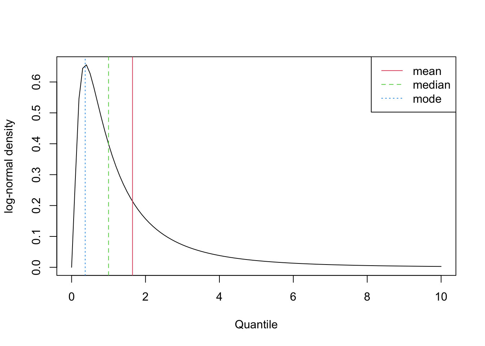
Since the lognormal distribution is skewed, the mean, the median, and the mode, are all different, but the mean is the most different. The height of the density curve at the mean is also much lower than it is at the median (by definition the height of the density curve is a maximum at the mode). This means that observations from this distribution are less likely to be close to the mean than the median. The one attribute the mean has is that it represents the centre of mass (or the balancing point) of the distribution. Unfortunately, this is quite often of little practical significance. In practice, when summarising skewed distributions (e.g. house prices, incomes), the median is always preferred to the mean. This leads us to conclude that it would be better to find a confidence interval for the population median, \(m\), than the population mean \(\mu\). To do this we will use the following procedure:
Given a sample of data from the skewed population, transform it so that it is symmetrically distributed (such that the mean and median should be roughly equal).
Find a confidence interval for the mean of the transformed data, \(\mu\). This interval will also be a good interval for the median of the transformed data, \(m\).
“Reverse transform” the confidence interval; i.e. apply the back transformation used on the data.
This new interval will be a confidence interval for the median of the original skewed population.
This procedure works because the median is a monotonic function with respect to power transform. For example, consider a data set \(X = \{x_i\}\) that requires a logarithmic transformation. The median of the transformed data set, \(\{\log(x_i)\}\), is equal to the logarithm of the median of the untransformed data set, \(\{x_i\}\). This is not true of the mean. The mean of the transformed data set, \(\{\log(x_i)\}\), is not equal to the logarithm of the mean of the untransformed data set, \(\{x_i\}\). If we reverse transform the mean of the log transformed data set, then the reverse transformed value will be the geometric mean of the raw data.
The distribution of vehicles in the rangitikei dataset is not symmetrical but very much skewed to the right with a probable outlier. The sample size 33 is only just above 30. It is of interest to compute the confidence interval for the true mean number of vehicles using the raw data (even though the CLT cannot be fully applied here). Using software, we obtain the 95% confidence interval for the mean as 13.1154 \(\leq\) \(\mu\) \(\leq\) 29.3694.
For one batch of data, it is relatively easy to choose an appropriate transformation for symmetry. With more than one batch of data, life is more complicated. On the one hand the symmetry of each batch could be examined, and various transformations tried quite separately. However it may then be very difficult to compare and interpret the batches. On the other hand, if each batch is skewed in the same direction, we may be able to apply a common transformation so that each batch becomes symmetric, or close to it.
If groups are skewed in different directions (i.e. some positively and some negatively), it would be difficult to choose a transformation. If the batches are small, the skewness may be due to random variation and could be ignored. If the batches are large, it may not be feasible to perform statistical inference if the degree of skewness is quite variable.
With 2 or more groups, we are often interested in comparing the location (or level) of the responses in these groups, the location being measured by the median, mean or similar statistic. In this situation we like to assume that the groups are similar in other aspects such as in the shape of the distribution and, in particular, the spread of the responses. These assumptions simplify and strengthen the hypothesis test. Quite often, the spread (measured (say) by the range) increases as the locations (measured (say) by the median) increases. It is advisable to use a transformation which removes the systematic relationship between spread and location. Confidence interval, and hypothesis tests, of two means assume that the samples come from populations which have the same variance, or spread. We later consider comparisons of more than two means, and standard methods of formally testing hypotheses regarding differences in means require the assumption that the spreads (variances) are constant over the groups. So in this section, we look at how to examine whether the variances are equal and, if not, how transformations of the data can sometimes serve to equalise the variances.
Consider the response variable people in the dataset rangitikei for time of the day (time) temperature groupings (temp). Figure 13 shows the boxplots of price for the combinations of time and temp factors. Also compare the position of the medians in the boxplots.
rangitikei |>
mutate(temp = paste("Temperature", temp)) |>
ggplot() +
aes(y = people,
x = time,
colour = time
) +
geom_boxplot() +
facet_wrap(~temp) +
ggtitle("People by time and temperature")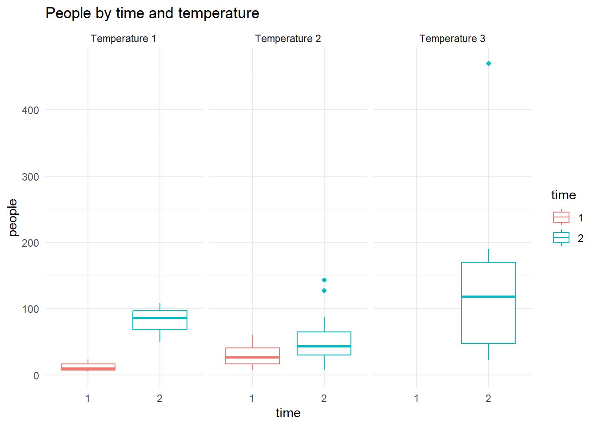
The assumption of a Normal distribution with constant variance may become crucial for certain confirmatory analysis. Hence the constancy of variance for each of the 24 batches is an important aspect we must look into. The boxplots are not supportive of the constant variance in the number of admissions. The relationship between spread and location issue can be explored using the medians and ranges of these batches.
rangitikei |>
group_by(time,temp) |>
summarise(
medians = median(people),
ranges = max(people) - min(people)
) |>
ggplot() +
aes(y = ranges, x = medians) +
geom_point()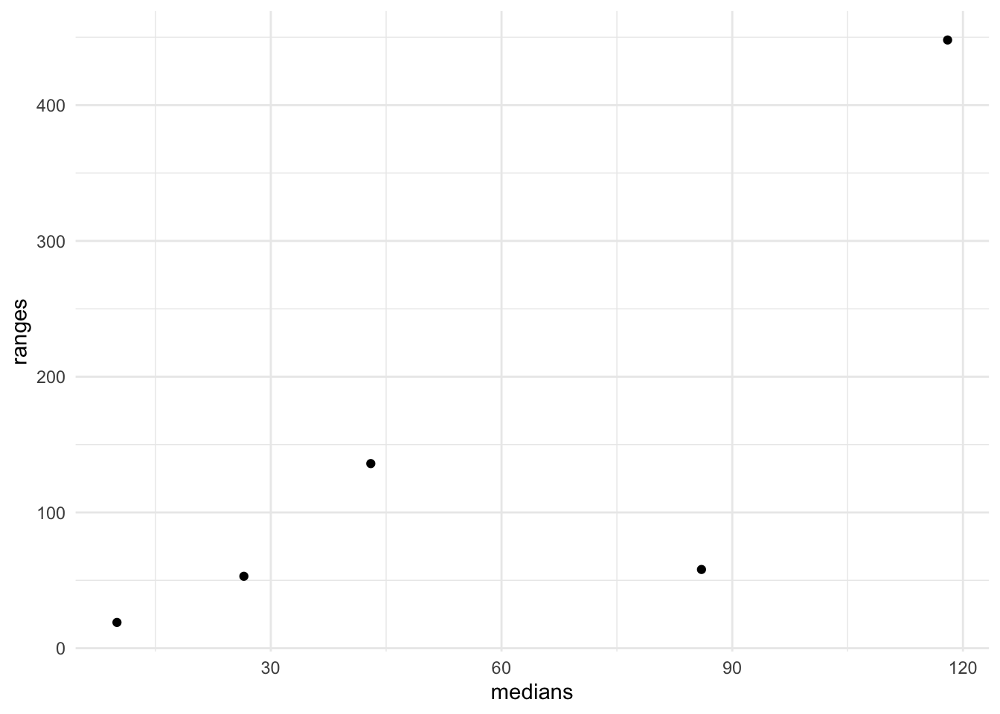
In Figure 14 the ranges are is plotted against the medians. It is clear that there is a positive trend in the data (larger ranges being associated with larger medians). We might compare this Figure with the ideal situation in which the points would fall in a horizontal band. So we conclude that the variability is not constant across time \(\times\) temp combinations.
In the absence of outliers, we can also plot standard deviations against means as shown in Figure 15.
rangitikei |>
group_by(time,temp) |>
summarise(
means = mean(people),
sds=sd(people)
) |>
ggplot() +
aes(y=sds, x=means) +
geom_point()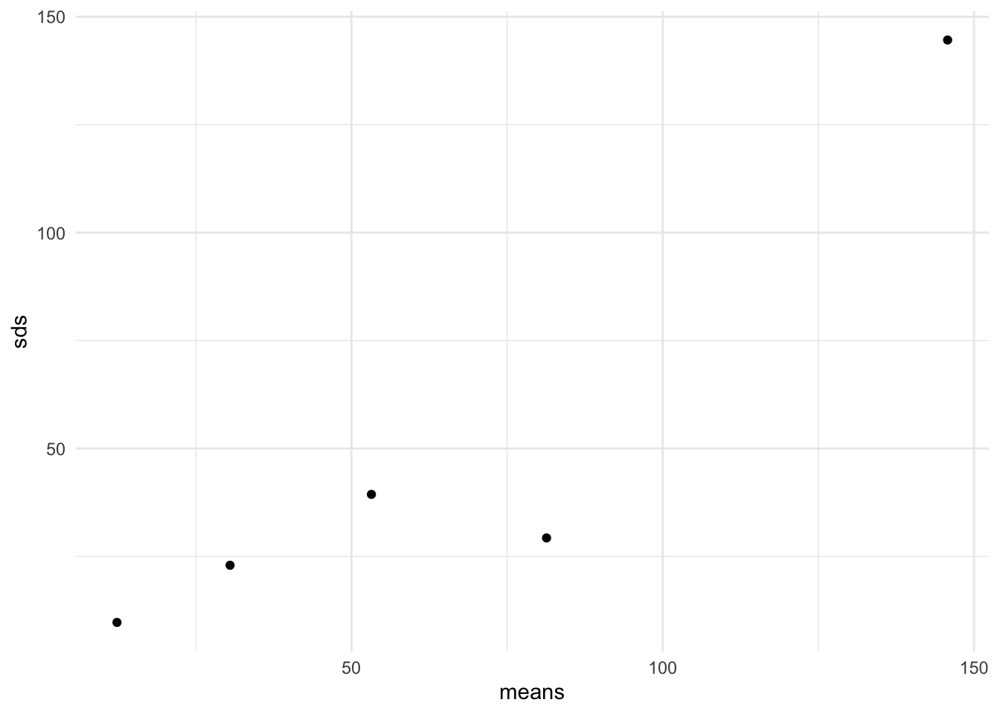
A common transformation can be found if ranges (SDs) and medians (means) are related somewhat strongly. For example, the log transformed people data shows a random scatter of ranges vs medians in Figure 16. This means that some improvement in the constancy of variance for subgroups is achieved by the chosen log transformation.
rangitikei |>
mutate(trans.ppl = log(people)) |>
group_by(time, temp) |>
summarise(
medians = median(trans.ppl),
ranges = max(trans.ppl) - min(trans.ppl)
) |>
ggplot() +
aes(y=ranges, x=medians) +
geom_point()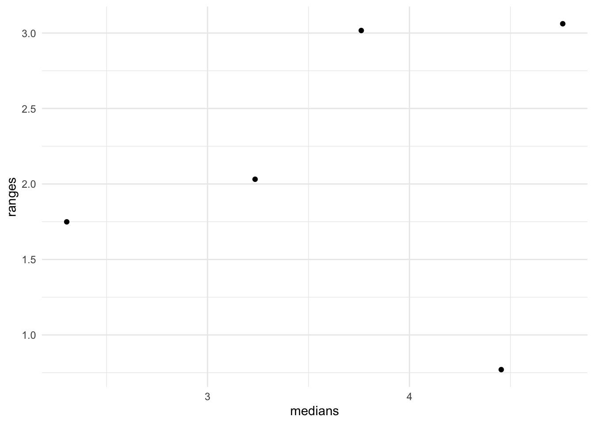
If groups are skewed in different directions, we may not be able to find a common variance stabilizing transformation.
In this section we outline an alternative to using power transformations as a method of preparing the data for hypothesis testing. The alternative approach usually relies on replacing the actual observed data values by their ranks. That is, the smallest data value is replaced by ‘1’, the second smallest by ‘2’, and so on up to the largest data value replaced by ‘\(n\)’. If there are several data with the same value (known as ties) then they are all assigned the average rank they would have gotten if they had received a tiny random increment before being placed in order: for example if the \(3^{\text{rd}}\), \(4^{\text{th}}\),\({5^\text{th}}\) and \({6^\text{th}}\) smallest data values are all the same, then the four corresponding points are all assigned rank 4.5, which is the average of 3, 4, 5 and 6. We then analyse the ranks as if they are the original data.
The rank approach in some ways seems like a bad idea, as we are throwing away information - the actual data - and only analysing a lesser amount of information which is the ranks. However the approach can be justified in two ways.
One is the fact that mathematical and simulation studies have shown that hypothesis tests based on ranked data have very good power compared to tests based on the Normal distribution - even when the data are truly Normal. That is, we don’t lose much by using a nonparametric method even if the Normal assumptions are perfectly true.
On the other hand if the data are not normally distributed, then the nonparametric tests are still powerful but the normal-theory methods can go wrong. So we are safer using a nonparametric method. The second justification, on a bit more of a philosophical level, is that if we honestly do not know what the distribution is, then we are probably wise not to pretend that any transformation is going to make it Normal. After all some data are collected on very odd scales indeed (e.g. optometry refers to ‘20/20 vision’ etc.), so that the data are just ordinal rather than numerical. In such a context rank methods may be appropriate as they pick up on ordinal difference rather than exact numerical difference.
A nonparametric approach used very frequently, especially in the social sciences, is the Spearman’s Rank Correlation. To calculate it, first rank the \(X\) and \(Y\) variable, and then obtain usual correlation (the so-called Pearson correlation) coefficient. If there are a great many ties in the ranks then various corrections or modifications to the Spearman method have been suggested, but these are beyond the scope of this course. In principle then, one could simply apply the usual data analysis techniques to the \(W= \text {rank}(Y)\) data and quote the \(p\)-values accordingly. We don’t usually do this in simple analyses, for reasons outlined below, but let’s explore this idea for a moment. Figure 17 shows the usual Pearson (lower diagonal) and Spearman rank correlations (upper diagonal) for the trees default R dataset.
ggpairs(
trees,
upper = list(continuous = wrap('cor', method = "spearman")),
lower = list(continuous = 'cor')
)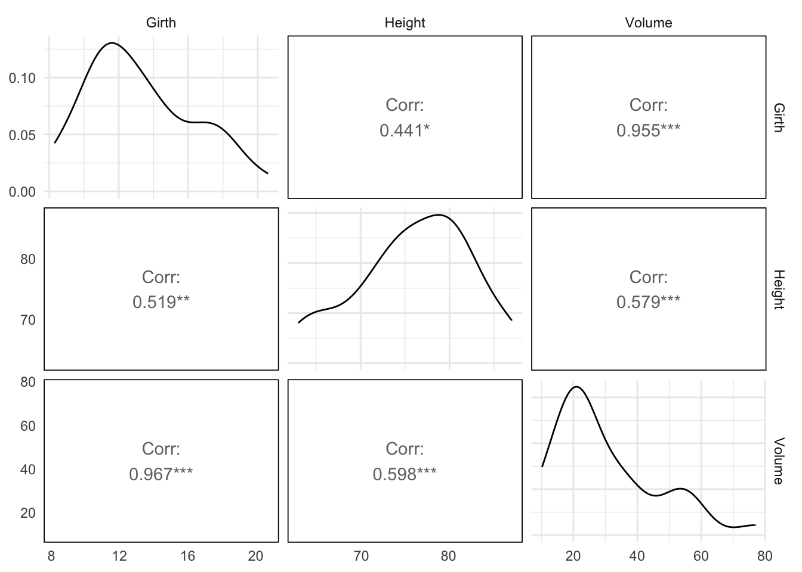
It can be noted that the size of the estimates differ depending on the skew and relationship between the variables. For large samples it would be quite a reasonable approach, as the distribution of \(W\) values is symmetrical and therefore the usual data analysis methods - relying on \(W\) being Normally distributed - will work pretty well. The main difference to standard hypothesis tests would be that they would need to be expressed in terms of medians, say, rather than means.
For example, a two-group hypothesis test would be based on computing \(W\) for all the \(n\) data values together, and then comparing the mean of the \(n_1\) ranks in the first group of observations to the mean of the \(n_2\) ranks for the second group of observations. If there is no difference in population medians for the two groups, then we should not be able to reject the hypothesis that the mean \(W\) values are the same.
In practice there are a couple of complications. One is that for small samples the distribution of \(W=\text {rank}(Y)\) is not Normal because it is discrete, taking only integers or averages of integers. But fortunately mathematical statisticians have long since worked out the exact distribution of \(W\) for many simple situations including two-sample tests, one-way ANOVA, two-way ANOVA with balanced numbers, correlation coefficients (e.g. the correlation between \(\text {rank}(Y)\) and \(\text {rank}(X)\)) and some others. So these exact distributions can be used for hypothesis tests, and are available. The second complication is that these exact distributions for \(W= \text {rank}(Y)\) usually depend on the assumption of no ties, i.e. no equal ranks. Since ties do often occur in practice (if only because data are not measured exactly enough) then we need to use methods that are modified or corrected to handle ties. Fortunately the use of a software handles such issues as a matter of course in many cases, so it doesn’t take any extra time or effort on our behalf.
For the nonparametric equivalent of a one-sample \(t\)-test for \(H_0:\mu= \mu_0\), we use the Wilcoxon signed rank test for \(H_0: \eta=\eta_0\) where \(\eta\) (Greek letter ‘eta’) is the population median. Effectively this test is based on rank \((|Y-\eta_0|)\), where the ranks for data with \(Y<\eta_0\) are compared to the ranks for data with \(Y>\eta_0\). If the \(\eta_0\) is in about the right place, then the distances to points above \(\eta_0\) will tend to rank approximately the same as the distances to points below \(\eta_0\). But if median is assumed too low, say, then the distances above \(\eta_0\) will tend to be bigger (ranked higher) than the distances to points below \(\eta_0\). A statistical test (Wilcoxon test) and the associated \(p\)-value follow. In theory, this test assumes a continuous symmetric distribution, but a correction is available in the case of ties. The following output shows the two-sample \(t\) test and Wilcoxon test results for testing the equality of median number of people for the time of day groups (morning & afternoon).
wilcox.test(rangitikei$people ~ rangitikei$time, conf.int=T)Warning in wilcox.test.default(x = DATA[[1L]], y = DATA[[2L]], ...): cannot
compute exact p-value with tiesWarning in wilcox.test.default(x = DATA[[1L]], y = DATA[[2L]], ...): cannot
compute exact confidence intervals with ties
Wilcoxon rank sum test with continuity correction
data: rangitikei$people by rangitikei$time
W = 30, p-value = 0.007711
alternative hypothesis: true location shift is not equal to 0
95 percent confidence interval:
-88.99996 -10.00005
sample estimates:
difference in location
-36.46835 The t.test(rangitikei$people~rangitikei$time) test also gives the same conclusion for the equality of means.
There is an additional one-sample test available called the one-sample sign test, which is based on replacing \(Y\) not by \(\text {rank}(Y)\) but simply by the sign of \(Y-\eta_0\), i.e. whether it is positive or negative. This replacement represents an additional loss of detail in the data, but also requires no assumptions. The resulting test is based on a binomial distribution. For example, consider the television viewing time data. Suppose we wish to test the hypothesis that children watch 4 hours of television per day on average (1680 minutes per week). The one-sample sign test output follows:
wilcox.test(tv$TELETIME, mu=1680, conf.int=T)
Wilcoxon signed rank exact test
data: tv$TELETIME
V = 588, p-value = 0.6108
alternative hypothesis: true location is not equal to 1680
95 percent confidence interval:
1557.5 1906.5
sample estimates:
(pseudo)median
1728 Notice the Wilcoxon test has about the same \(p\)-value as the Normal-based \(t\)-test. However as it assumes symmetry the estimated median is the same as the sample mean. The \(p\)-value for the sign test is similar, but not the same as the others, and the estimated median is the same. The Wilcoxon and Sign test procedure can also be used to generate approximate 95% confidence intervals for the median. Note that these are based on the sorted sample data, and so are discrete, so it is usually not possible to get exact 95% confidence intervals. Both intervals are wider than the confidence interval based on the mean. The loss of precision (longer interval) is reasonable as we are making much weaker assumptions.
As an alternative to the two-sample \(t\)-test is the Wilcoxon Rank-Sum test (also mathematically equivalent to a test known as the Mann-Whitney test). The assumptions of the test are that the data are continuous (or at least ordinal) from populations that have the same shape (e.g. same skewness and same variance) but just (possibly) different medians. For this test, the entire set of responses is ranked together and then the ranks for the first group are compared to the ranks for the second group. The null hypothesis is that the two group medians are the same: \(H_0: \eta_1=\eta_2\). The following R output shows the Wilcoxon Rank-Sum test results.
kruskal.test(tv$TELETIME ~ factor(tv$SCHOOL))
Kruskal-Wallis rank sum test
data: tv$TELETIME by factor(tv$SCHOOL)
Kruskal-Wallis chi-squared = 7.6389, df = 2, p-value = 0.02194Again since our data are normally distributed we expect to get a similar result for the Mann-Whitney test as for the two-sample \(t\)-test of equal means \(\mu_1=\mu_2\). This is indeed the case.
The computationally intensive alternatives to non-parametric methods are also available. Such tests are popular in certain application areas. We will cover them at a basic level only but these are not too hard to perform using R packages.
A permutation (or randomisation) test is based on the idea of randomly permuting the observed data and then answering whether a hypothesis is negated or not. For example, consider the two-sample t-test example on testing whether the mean TV viewing times are the same for boys and girls. We can pool the all of the data and then randomly distribute the observed data into two groups and compute the difference in the means for the two groups (maintaining the group sizes of course). This process of randomly permuting data can be done for a large number of times and then the empirical (permutation) distribution of the differences can be obtained. We can then obtain a P value as a proportion of the permuted differences that are as extreme as the actual mean difference. Many R packages are available to do this test, often with a single command. There are asymptotic forms of the permutation distribution for the statistic and hence computations can be done fairly quickly.
Consider the one-sample t-test example for \(H_0:\mu = 1500\) for the tv dataset.
wilcox.test(tv$TELETIME, mu = 1500)Warning in wilcox.test.default(tv$TELETIME, mu = 1500): cannot compute exact
p-value with ties
Wilcoxon signed rank test with continuity correction
data: tv$TELETIME
V = 773.5, p-value = 0.01108
alternative hypothesis: true location is not equal to 1500For two-sample test example based on the tv dataset, we obtain the following output using the coin package. The P-values under this test is very similar to the P-value under the Welch t-test (0.471).
library(coin)Loading required package: survivalindependence_test(TELETIME ~ SEX, distribution = 'exact', data = tv)
Exact General Independence Test
data: TELETIME by SEX (1, 2)
Z = -0.72876, p-value = 0.471
alternative hypothesis: two.sidedThe symmetry in the distribution of the TV times can also be tested using the function symmetry_test(). The significance of the Pearson correlation coefficient can be tested using spearman_test(). Pairwise permutation test across groups can also be done; see the output shown below:
wilcox.test(x = testmarks$Maths,
y = testmarks$English,
paired=TRUE)Warning in wilcox.test.default(x = testmarks$Maths, y = testmarks$English, :
cannot compute exact p-value with tiesWarning in wilcox.test.default(x = testmarks$Maths, y = testmarks$English, :
cannot compute exact p-value with zeroes
Wilcoxon signed rank test with continuity correction
data: testmarks$Maths and testmarks$English
V = 380, p-value = 0.8945
alternative hypothesis: true location shift is not equal to 0There is a close theoretical connection between randomisation type and nonparametric tests. So the results are often similar when the same size is large.
When a random sample is taken from a population, the expectation is that it is representative. So why not sample from the sample (i.e. resample) so that the quality of how well the sample is representative can be examined. We cannot gain extra information hugely by ordinary resampling and it is more like moving forward pulling the bootstrap! The methodology bootstrapping or resampling was introduced by Efron (1979). This computational intensive procedure can be implemented very mechanically and simpler. By computing the sampling distribution of a statistic of interest, issues such as its bias and the standard error can be addressed.
R package boot has many features and several variations (types) of the bootstrap resampling method but harder to use. We will use the resample package instead because it is simpler and also includes simple permutation tests.
Under the simple bootstrap method, observations are resampled with replacement from the original sample to create a bootstrap sample. We can then compute a statistic such as the sample mean for this resample. This process can be repeated many times, say 10000, and we form the bootstrap distribution of the statistic. Consider the tv dataset. If we resample TELETIME, and compute the mean television viewing time for each sample, we construct the bootstrap distribution of mean. Using the resample package, we get-
library(resample)
bootC <- bootstrap(tv$TELETIME, mean)
bootCCall:
bootstrap(data = tv$TELETIME, statistic = mean)
Replications: 10000
Summary Statistics:
Observed SE Mean Bias
mean 1729.283 82.74484 1728.54 -0.742787This output shows the observed sample mean 1729.283 and the mean of all bootstrap means which is 1729.114. The bias is the difference, which is -0.168. The main advantage of the bootstrap method is that it can quantify the bias that can occur due to sampling. Figure 18 and Figure 19, respectively, show the histogram and the normal quantile plots for the bootstrap means. Obviously the bootstrap means follow normal (due to CLT).
hist(bootC)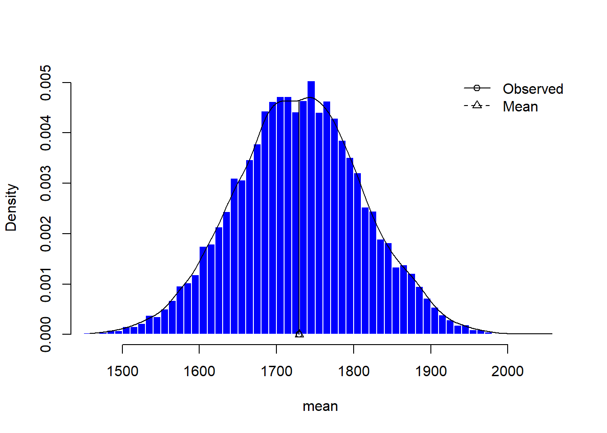
qqnorm(bootC)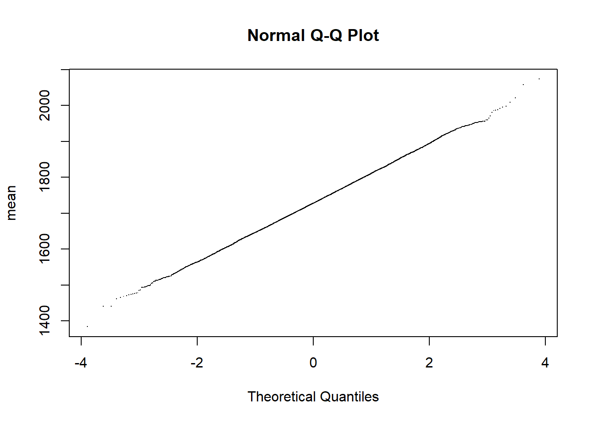
There are many versions of bootstrap confidence intervals depending on the way bootstrapping is done. Without going into details, the 95% confidence interval for the true mean viewing time is obtained as follows:
CI.t(bootC) 2.5% 97.5%
mean 1560.637 1897.928This interval compares well with the confidence interval using t-distribution found earlier namely (1560.633, 1897.932). The same approach can be taken to construct a confidence interval for the mean of the paired differences and thereby perform a test analogous to paired t-test. See the testsmarks data example given below:
differ <- testmarks$Maths-testmarks$English
bootC <- bootstrap(differ, mean)
CI.t(bootC) 2.5% 97.5%
mean -4.175863 4.925863The parametric (i.e. t-test based) and bootstrap results are very similar. The bootstrap method can obtain better confidence intervals for the mean when the population is skewed because resampling tends to adjust for the skew in the population when captured by the sample well. The bootstrap approach will work well only when reasonably large sample sizes are available because of the inherent uncertainty in the tails of the underlying distribution. Small samples are not sufficient to identify capture the tails of the distribution and hence certain types of inferences involving tail part of distribution will not work well. Parametric assumptions can be made to improve the bootstrap method and this approach is known as parametric bootstrapping. We will not study such methods in this course.
The resample package also has options to bootstrap from two vectors. Consider the television viewing times for the boys and girls groupings. We resample from the two groups to perform the two sample test.
bootC <- bootstrap2(tv$TELETIME, statistic=mean, treatment=tv$SEX)
CI.t(bootC) 2.5% 97.5%
mean: 1-2 -468.7219 224.6349The bootstrap test conclusion again agrees with the Welch two-sample t-test conclusion.
You will not be examined on the use of permutation and bootstrap tests in the final exam. We may occasionally use this approach for assignments.
The Normal distribution is important not only in its own right as a model for data, but because it plays a basic part in confirmatory statistics. Indeed the \(t\), \(F\) and \(\chi^2\) statistics we will use in the rest of this course all assume that the populations are Normal. The sample under study will not follow exactly a Normal distribution but we will often require it to be at least approximately symmetric.
A standard Normal, \(Z\), can be obtained as follows:
\(Z\) = (statistic-expected)/standard error.
The statistic may be the sample mean, \(\bar{y}\), or it may be the coefficient of a linear model.
If the standard error is not known but must be estimated from the sample, the standard variable follows a \(t\) rather than a \(Z\) distribution. If the statistic is the mean, \(\bar{y}\), the standard error is \(S/\sqrt n\), here \(S=\sqrt{{\frac{1}{n-1}} \sum _{i=1}^{n}(y_{i} -\bar{y})^{2} }\).
For other statistics, the standard error may be more complicated and we shall rely on a computer program to calculate this.
Usually a confidence interval for the expected value has the form
statistic \(\pm\) margin of error
where margin of error = \(t\) \(\times\) estimated standard error.
Notice that:
For a 95% confidence interval of population parameter, we would expect 95% of such intervals to include the true value of the parameter (such as the population mean).
To increase the confidence level from (say) 95% to 99%, the tabulated \(t\)-value will increase, yielding a wider confidence interval.
If the sample size was increased, we would expect the estimated standard error to decrease so that the confidence interval would become shorter.
We have considered symmetric confidence intervals. If data is skewed (say to the right) a symmetric confidence interval may not be appropriate. In such a case we may use a transformation to make the data symmetric, find our confidence interval, and convert back to the original scale.
Hypothesis testing and confidence intervals for the mean difference of two batches of data usually assume that the two populations are normally distributed and the variances of the two populations are the same. Of course the variances of the samples will differ but, hopefully, not by too much for this would suggest that a transformation may be desirable. If the means of the two populations are equal, we would expect the difference of the sample means, \((\bar{y}_{1} -\bar{y}_{2})\), to be close to zero and, conversely, we would expect the confidence interval for the difference in means to include zero.
If the population means are different, we would expect the difference in the sample means to be a value different from zero. So, if the value of zero does not fall in the confidence interval, the hypothesis that the means are equal will be rejected. We make our decision to accept or reject the hypothesis based on the P-value. We reject \(H_0: \mu_1 = \mu_2\) only if the \(p\)-value \(<\) the set significance level, usually 5%.
There are many ways of transforming data. Simple transformations can be used such as multiplying each value by 100 to remove decimals or to convert to percentages, or a ratio transformation, such as petrol consumption expressed as litres per 100 km. In this course, we concentrate on power transformations where each observation, \(y\), is raised to the power of \(\lambda\). For negative values of \(\lambda\), it is advisable to multiply transformed values by \(-1\) as this preserves the original order in the data. In this chapter, we have considered two reasons for transformations.
The first reason was to obtain symmetry in a single batch of data. Such transformations are sometimes required when we decide to carry out hypothesis tests or compute confidence intervals for some variable.
With more than two batches of data, we have the additional reason of the need for common variance across batches. To compare means using Normal-based methods, it is advisable for the measurements in each batch to be both distributed symmetrically and with the same spread and variation as those in other batches. It may not be possible to find a single transformation, which will bring about these two ideal characteristics but a transformation may be found to bring the measurements closer to these ideals. Note that, to compare groups, or the means of these groups, the same transformation must be applied to each group. If groups are skewed in different directions (positive and negative), no transformation would be appropriate.
Nonparametric and other computationally intensive methods such as the regular bootstrap methods can be useful when normal and other distributional assumptions are grossly violated. These methods are also useful for validating Normal-based results.
Bear in mind though that no real population of values (except for synthetic ones, simulated by a computer) is normally distributed in reality. A variable can only be normally distributed in theory. The real world just is what it is. Recall Box’s adage: “All models are wrong, but some are useful”. When we test for a departure of a variable from, say, a normal distribution, we are simply testing whether the normal distribution provides an adequate model for the data.↩︎